第1集《陪练》 · 美术资产库
EP01 分镜段与素材清单
「手头已有」只列本段已有的素材文件，如成图、视频、音频或已导出的贴片。提示词、版式、参考和待制作说明可从对应的待准备资产卡查看。
六场共 10 段，初排 112 秒。各段独立备料；标注的秒数随对白试读和镜头接点核定。
人物素材按镜头选用对应的现实妆造板或 COS 妆造板。生成时若需要加强人物辨识度，再单独上传本人正脸。
段 01｜1-1｜大堂正脸与双脸交错｜约 6 秒
镜头 温以宁从大堂南端入口向基地内走。摄影机在她前方，位于通行带内，朝南对准入口，随着她前进向基地内后退。首帧就是她背着 ZG 外设包走来的正脸中近景，旁白起。她经过西墙广告屏时与屏内 Crown 的正脸交错，短暂升格，随后恢复常速，接下一步推门。
手头已有 温以宁（Vigil）｜ZG 基地私服定妆板、温以宁（Vigil）｜ZG 个人外设包三视图、ZG 基地公共大堂｜空景（02：入口、行走轴和屏幕位置）
需准备的素材 顾行舟（Crown）｜耳机赞助广告视频、大堂宣传屏｜广告与角标贴片
接点与后期 02 用于核对空间：入口在远端，西墙广告屏在画面右侧。首帧构图待定，使用相机在温以宁正前方的正脸中近景。她沿通行带往里走，相机沿同轴后退；到交错点，画面右侧必须仍看得到屏内 Crown 的正脸，并与温以宁的正脸短暂同框。01 是入内时的背影方向。旁白单独录，广告和角标后期合成。 交错点对齐广告末尾的正脸稳定段。
段 02｜1-1A｜进门、入座、戴耳机｜约 8 秒
镜头 斜侧广角交代玻璃门和椅后通道，四人已坐好，中席空着。温以宁背包进门，从通道到第三席，放稳包，坐下戴耳机。收在耳罩贴合。
手头已有 温以宁（Vigil）｜ZG 基地私服定妆板、温以宁（Vigil）｜ZG 个人外设包三视图、贺之扬（Blaze）｜ZG 基地私服定妆板、陆川（Ash）｜ZG 基地私服定妆板、谭屹（Yi7）｜ZG 基地私服定妆板、周牧（MuZ）｜ZG 基地私服定妆板、温以宁（Vigil）｜比赛键盘、温以宁（Vigil）｜比赛鼠标、ZG 基地一队训练室｜空景母图、ZG 基地一队训练室｜01 空间主视角、ZG 基地一队训练室｜02 入口反向机位、ZG 基地一队训练室｜03 主要动作全景
随视频生成 入座和戴耳机时同步生成环境底声与键盘声，戴上后底声收低。
接点与后期 训练室北墙长桌上方预留队徽位，后期使用 ZG 官方原图按墙面透视贴入。拍到北墙的机位沿用同一位置和比例。戴耳机后室内键盘底声收低，切云垣。
段 03｜1-2｜绮罗与伊格尼对线｜约 12 秒
镜头 平视双人建立轴线，伊格尼抬手蓄火。低机位接绮罗踏前一步，白弦从指间弹出绕腕。近景确认收紧，伊格尼碎成火星。
手头已有 温以宁（Vigil） × 绮罗｜COS 定妆板、欧阳嘉树（Rift） × 伊格尼｜COS 定妆板
需准备的素材 天穹中路｜实机底图（B1）、天穹中路｜真人空景（C1/C2）、绮罗 × 伊格尼｜双人起始静帧
随视频生成 白弦从指间弹出、绕腕收紧，伊格尼袍角火焰及碎成火星，随本段视频生成。
接点与后期 用双人起始静帧起镜，衔接伊格尼抬手与绮罗踏前。
段 04｜1-3｜击杀归在 Crown 名下｜约 12 秒
镜头 屏幕近景依次读击杀和对手聊天。切五席揭晓温以宁坐第三席，贺之扬看她一眼又回屏，陆川说她比舟哥自己打得还干净。
手头已有 温以宁（Vigil）｜ZG 基地私服定妆板、贺之扬（Blaze）｜ZG 基地私服定妆板、陆川（Ash）｜ZG 基地私服定妆板、谭屹（Yi7）｜ZG 基地私服定妆板、周牧（MuZ）｜ZG 基地私服定妆板、温以宁（Vigil）｜比赛键盘、温以宁（Vigil）｜比赛鼠标、ZG 基地一队训练室｜空景母图、ZG 基地一队训练室｜04 窗侧五席、ZG 基地一队训练室｜05 第三席屏幕近景
需准备的素材 ZG 一队｜队徽、天穹中路｜实机底图（B1）、训练室第三席｜HUD 贴片（击杀与全体聊天）
接点与后期 训练室北墙长桌上方预留队徽位，后期使用 ZG 官方原图按墙面透视贴入。拍到北墙的机位沿用同一位置和比例。屏幕显示 ZG.Crown，因为她登录的是顾行舟本人账号；UI 后期叠加。
段 05｜1-3｜胜利后退号｜约 9 秒
镜头 胜利弹出，温以宁摘耳机。秦岳在第三席椅背后低头记一笔，交代退号和把键位调回去。温以宁仍坐第三席，切办公室。
手头已有 温以宁（Vigil）｜ZG 基地私服定妆板、秦岳｜ZG 基地工作定妆板、写字板、ZG 基地一队训练室｜空景母图
需准备的素材 ZG 基地一队训练室｜空景（中席椅后机位）、ZG 一队｜队徽、降噪耳机、训练室第三席｜HUD 贴片（胜利）
接点与后期 训练室北墙长桌上方预留队徽位，后期使用 ZG 官方原图按墙面透视贴入。拍到北墙的机位沿用同一位置和比例。秦岳原台词独立保留。胜利提示后期贴。
段 06｜1-4｜开口要一场比赛｜约 10 秒
镜头 桌前后双人建立站坐关系。温以宁开口要一场常规赛，秦岳继续看合同，说她今天打得不错，她接不只今天。
手头已有 温以宁（Vigil）｜ZG 基地私服定妆板、秦岳｜ZG 基地工作定妆板、ZG｜选手签约合同
需准备的素材 ZG 基地教练办公室｜空景（日间空景及桌轴同侧画框）、ZG 一队｜队徽、ZG 一队｜队员合照
接点与后期 三句原台词，收在秦岳准备合合同。
段 07｜1-4｜只让她当陪练｜约 13 秒
镜头 秦岳合上合同才抬眼，讲中单位置和赞助商签的是谁的脸。温以宁站着听完，说那我走。
手头已有 温以宁（Vigil）｜ZG 基地私服定妆板、秦岳｜ZG 基地工作定妆板、ZG｜选手签约合同
需准备的素材 ZG 基地教练办公室｜空景（同轴反应画框）
接点与后期 收在温以宁说完，接秦岳重新翻合同。
段 08｜1-4｜违约金压住去路｜约 19 秒
镜头 秦岳翻到末页，把合同推到她面前，手指压住金额行。先听他把违约金和没有队会要她的话说完，再留她看数字的一拍，接回去训练与晚上陪练的交代。
手头已有 温以宁（Vigil）｜ZG 基地私服定妆板、秦岳｜ZG 基地工作定妆板、ZG｜选手签约合同（末页）
需准备的素材 ZG 基地教练办公室｜空景（桌边近景）
接点与后期 金额只留独立图形位，数字以正式剧本为准。
段 09｜1-5｜三通电话逐一碰壁｜约 15 秒
镜头 同一台阶，同一部手机。三个渐短节拍，从听完对方解释到只听见最后一句算了。剪切由反应和挂断动作带动。
手头已有 温以宁（Vigil）｜ZG 基地私服定妆板、iPhone｜外观
需准备的素材 ZG 青训宿舍楼梯间｜空景（坐姿机位）
随视频生成 三通电话的对端声音随本段视频生成，按剧本顺序出现，画面留在温以宁这边。
接点与后期 最后一通挂断后接黑屏。黑屏映脸用同一部 iPhone，在第 10 段镜头里处理。
段 10｜1-5｜黑屏后收到沈清邀请｜约 8 秒
镜头 手机黑屏短暂映出温以宁的脸。她手还停在同一高度，屏幕重新亮起，读清好友申请与约见地点，收在她看到这条消息。
手头已有 温以宁（Vigil）｜ZG 基地私服定妆板、iPhone｜外观
需准备的素材 ZG 青训宿舍楼梯间｜空景、楼梯间手机｜黑屏与好友申请贴片
接点与后期 沿用第 09 段的 iPhone。黑屏映脸随镜头制作；亮屏和好友申请内容用 U01-03 后期贴片，留足附言可读时间。沈清只作为屏幕申请人。
EP01 六场资产核对
剧情备注｜温以宁的穿衣变化
按 Drive 正式剧本：1-1 温以宁穿白底黑边宽松运动套装，拉链拉到领口，袖口洗得微微起毛；3-1 从 ZG 搬到 EMB 时仍穿同一身。15-4 许禾发现她压在箱底的雾蓝短开衫，温以宁说在 ZG 两年习惯了原来的穿法，随后自己把开衫拿出来；次日 15-4A 仍穿原运动套装。21-2 首次明确穿出这件开衫：敞穿配白 T、深灰直筒牛仔裤、银色小发夹；何苗顺手替她压平衣领。
资产卡下方的原版提示词区已更新为本集审核词。
1-1｜ZG基地·公共大堂
已确认本地镜头为温以宁正脸开场、双正脸交错短暂升格。旁白为后期画外音，属本地导演稿。空景只留宣传屏、通行带和出口画框。 参赛选手使用自己的外设。温以宁背的是装她本人外设的大包；坐的是 Crown 机位，登录的是 Crown 账号，键盘鼠标等外设是她自己的。
- 温以宁 · P-009｜大堂行走，正脸开场，衣装接 1-1A
- 顾行舟 · P-053｜只在大堂宣传屏内，正脸戴 ZG 战队耳机
1-1A｜ZG基地·训练室
四位队员在场是已确认调度，正式剧本此场人物栏只点名温以宁。玻璃门嵌在右侧隔断，门确切位置与开合待核。 进门时外设包仍由温以宁携带。落座后使用本人外设，包在中席一侧放稳，具体摆位按画框确认。
- 温以宁 · P-009｜推门，坐空出的第三席，戴降噪耳机
- 贺之扬 · P-052｜第1席已就座
- 陆川 · P-051｜第2席已就座
- 谭屹 · P-055｜第4席已就座
- 周牧 · P-054｜第5席已就座
1-2｜天穹·中路（cos层）
实机和真人 COS 共用 A1/B1 地形。白光琴弦在视频生成时随出手与绕腕动作制作，伊格尼化为火星按镜头分工执行。
- 温以宁 · C-018｜温以宁本人脸，绮罗定稿，琴弦在视频生成时制作
- 欧阳嘉树 · C-069｜欧阳嘉树本人脸，伊格尼，暗红假发与火舌袍角
1-3｜ZG基地·训练室
这是基地训练赛。温以宁穿白底黑边运动私服，其余选手各穿日常私服。大堂的赞助广告按拍摄要求使用对应赛季队服。温以宁替顾行舟打训练赛，实际登录的是顾行舟本人的 Crown 账号。ZG 只让她当陪练，没打算给她一队上场机会。 屏幕按正式剧本显示 ZG.Crown 击杀 PLG.Rift。
- 贺之扬 · P-052｜第1席，回望中席
- 陆川 · P-051｜第2席，说话
- 温以宁 · P-009｜第3席，获胜后摘耳机
- 谭屹 · P-055｜第4席
- 周牧 · P-054｜第5席
- 秦岳 · X-3866297EF｜中席椅背后，用写字板
01 · 场景资产
现实、游戏实机、真人COS；一个物理空间只建一个母图与九宫格，不包含人


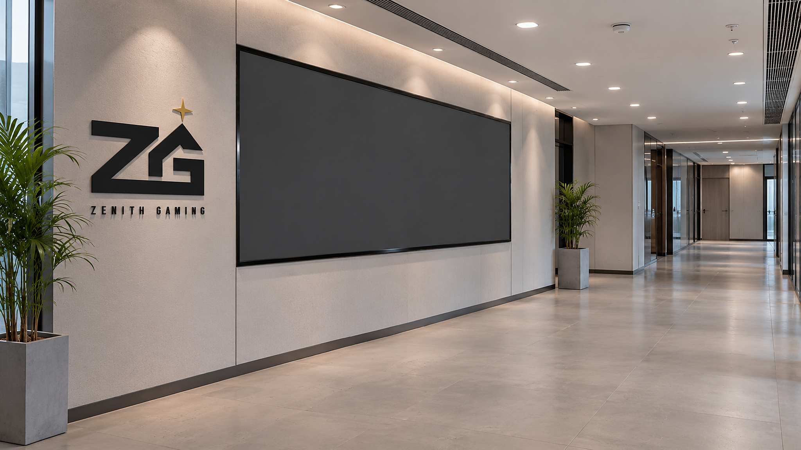
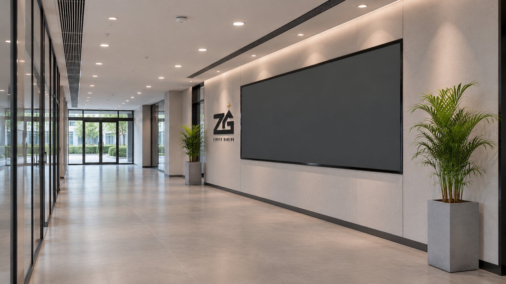
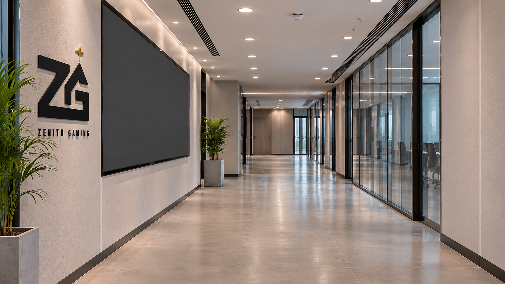

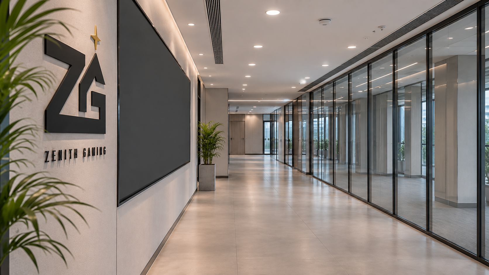

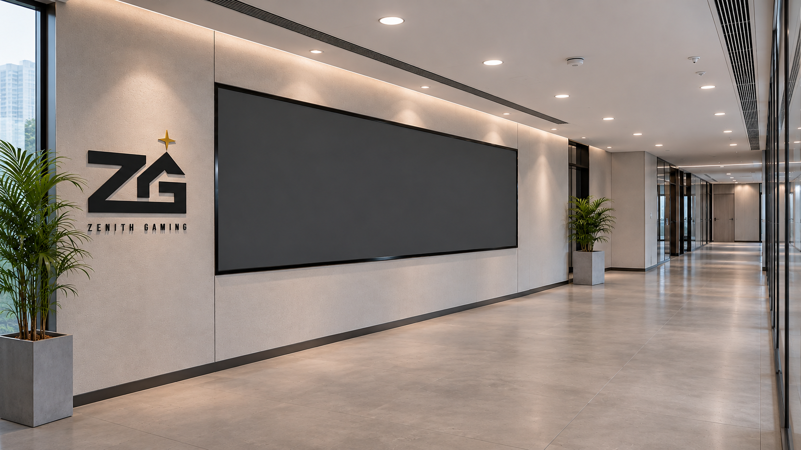

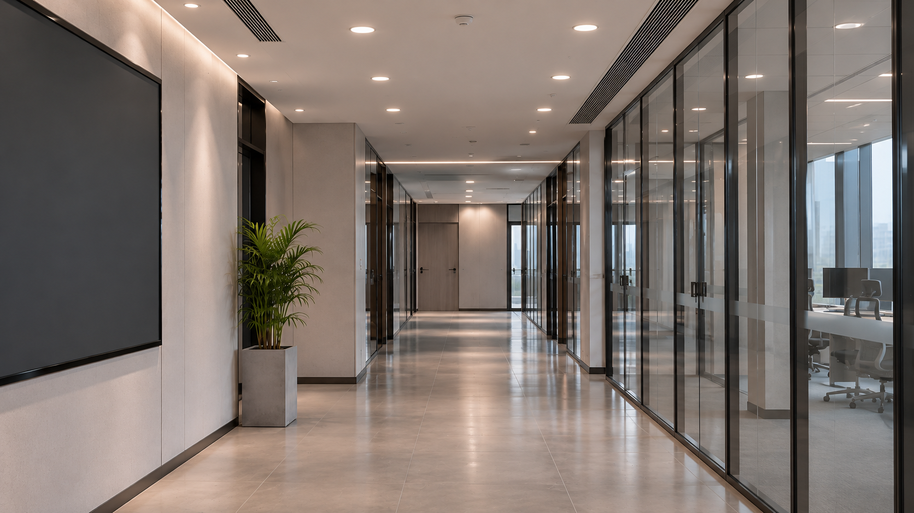

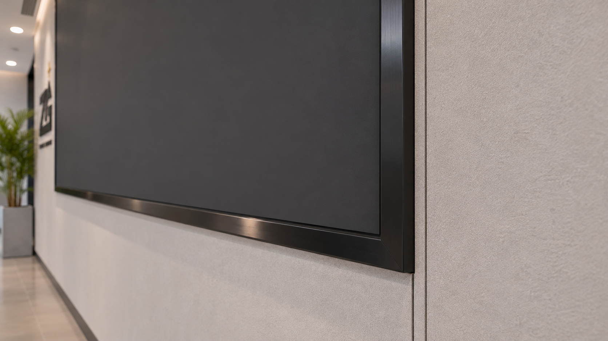

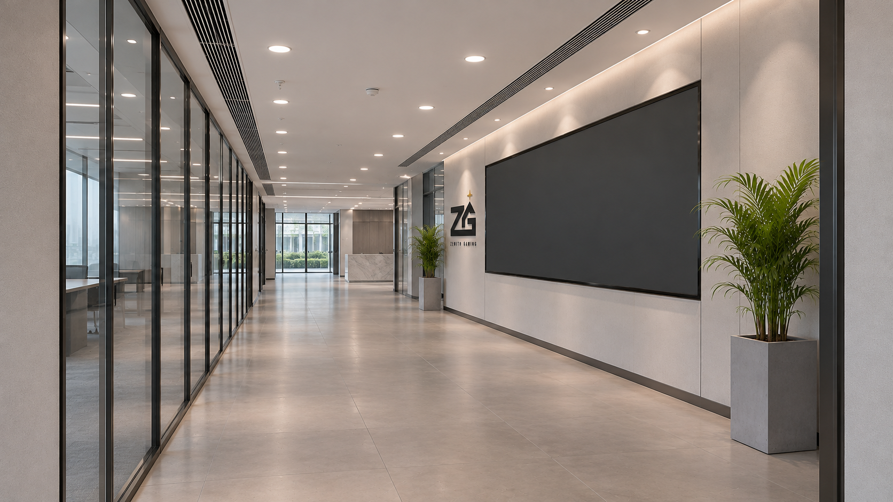

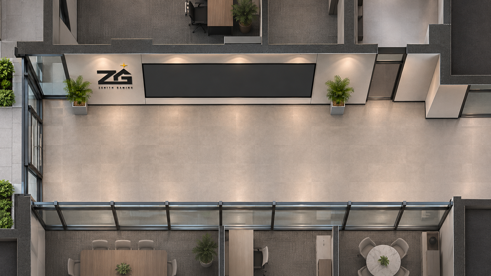
该机位待出图
ZG 基地公共大堂｜空景
接待侧墙嵌装横屏；连续通行带；屏外的ZG基地环境；通往训练区域的开口
剧情关联人物：顾行舟（只引用，不在空景里生成）
场景母图提示词
首次生成用这条。母图确认后，把它作为后续各机位的共同参考。
文字生图。生成一张16:9真人实景空景母图。 【固定空间】西墙中段嵌横向宣传屏，显示面朝东，屏面统一深灰。屏东侧是南北向连续通行带，南端为来向，北端偏东接基地内走廊。墙、屏框、走道与地砖接缝固定。 【母图构图】35mm，摄影机在通行带南端朝北，取带西墙宣传屏的三分之四全景，同时看到北端偏东的走廊口。 【真人实景质感】中国职业电竞俱乐部租用的当代办公楼接待层，成人站姿视线高度，主机位约35mm，竖线端正。地面为浅暖灰大规格哑光瓷砖，细灰填缝连续，窗光只在近窗一带留下柔软、低对比的倒光；脚步经过区域可见极轻的擦痕。接待墙哑光涂料与板材留真实窄接缝，嵌墙商用显示屏有薄黑金属边框、安装收口缝和微弱环境倒影；深灰空屏在各机位保留同一位置与朝向。白天侧方入光，离窗逐渐减弱，天花普通嵌灯只补暗面，门套与踢脚线处有自然接触阴影。用接待墙饰面、灯具比例和整齐收口做出维护良好的基地质感。避免发光线条、整面镜面地板、塑料石材、高饱和氛围灯和游戏CG式硬轮廓。 仅输出一张16:9场景图，整幅为本次机位的空景，无人物、人形倒影、HUD、额外文字或拼图。
【参考图】上传图1为已确认的ZG基地公共大堂空景母图，用于锁定已批准的布局、材质和光照。 【固定空间】西墙中段嵌横向宣传屏，显示面朝东，屏面统一深灰。屏东侧是南北向连续通行带，南端为来向，北端偏东接基地内走廊。墙、屏框、走道与地砖接缝固定。 【本次机位 01】35mm，摄影机在通行带南端朝北，取带西墙宣传屏的三分之四全景，同时看到北端偏东的走廊口。 【真人实景质感】中国职业电竞俱乐部租用的当代办公楼接待层，成人站姿视线高度，主机位约35mm，竖线端正。地面为浅暖灰大规格哑光瓷砖，细灰填缝连续，窗光只在近窗一带留下柔软、低对比的倒光；脚步经过区域可见极轻的擦痕。接待墙哑光涂料与板材留真实窄接缝，嵌墙商用显示屏有薄黑金属边框、安装收口缝和微弱环境倒影；深灰空屏在各机位保留同一位置与朝向。白天侧方入光，离窗逐渐减弱，天花普通嵌灯只补暗面，门套与踢脚线处有自然接触阴影。用接待墙饰面、灯具比例和整齐收口做出维护良好的基地质感。避免发光线条、整面镜面地板、塑料石材、高饱和氛围灯和游戏CG式硬轮廓。 仅输出一张16:9场景图，整幅为本次机位的空景，无人物、人形倒影、HUD、额外文字或拼图。
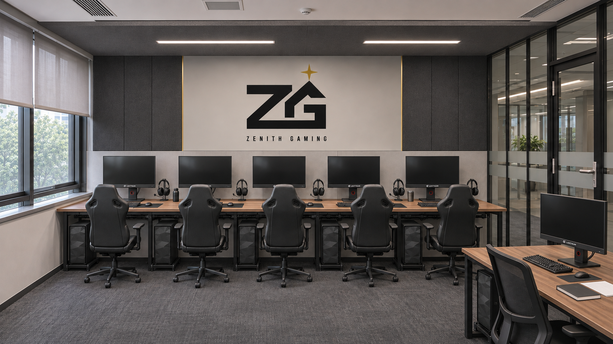
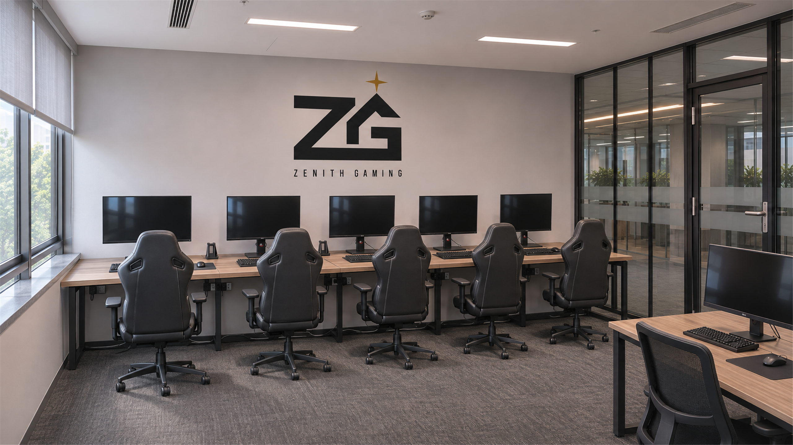
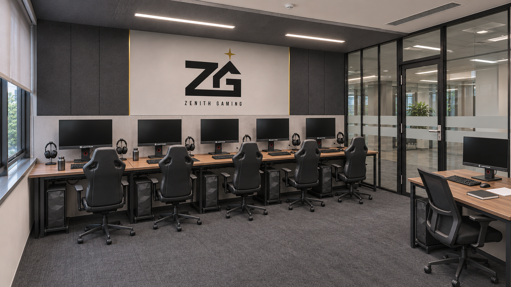
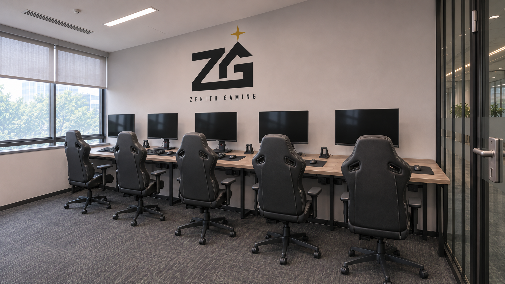
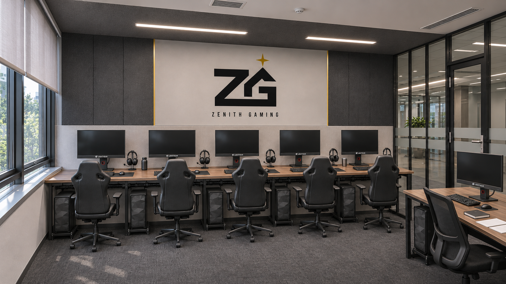
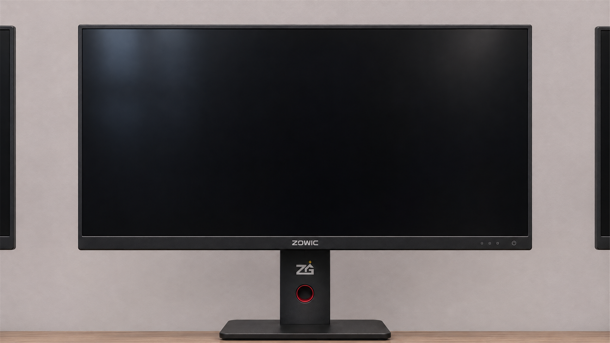
该机位待出图
ZG 基地一队训练室｜空景
北墙队标与长桌；五个固定席位；西窗与东玻璃；椅后通道
新版母图、01–09 全部已通过。
分机位提示词
固定硬件参考
图1上传待修订的原机位。以下为图2–4。机箱是实物外观参考，显示器使用已有05成图锁形。
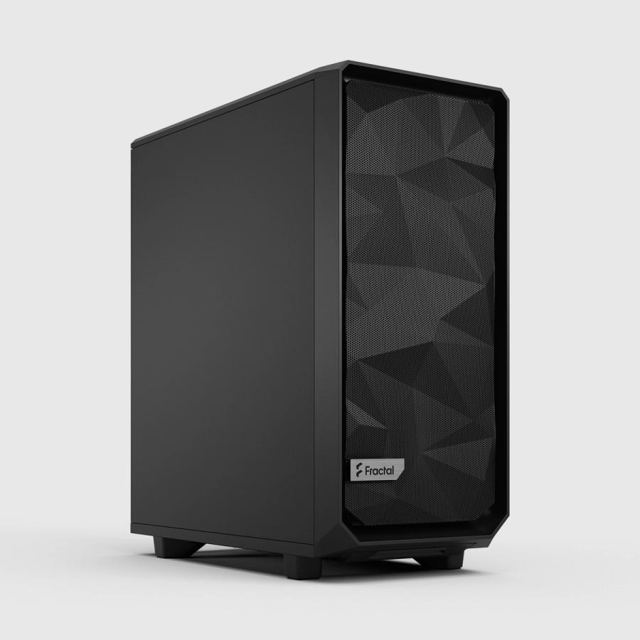
图2 · 机箱｜Fractal Meshify 2 Compact Black Solid 官方产品原图来源 ↗ · 厂家外观参考，非剧内正式品牌或已通过成图
黑色实板中塔，立体折面细冲孔前网、哑光钢板侧面、顶部I/O、真实脚垫与散热结构；约深424×宽210×高475 mm；不复制实物厂商标志。
来源 ↗ · 用户确认成图 · 2560×1440 · 设备外形与英文标识基准
锁定黑色16:9平面屏、窄三边框、较宽下边框、中央立柱、红色圆形理线孔、低矮矩形底座。以已确认05为准：下边框中央低调银灰光年图形标与 LIGHTYEAR 英文字标，立柱无队徽，右下单一状态灯；真实线缆与哑光底座。赞助宣传沿用原图形加中文组合标。
主机局部修订提示词
局部补图。图1上传本次待改原机位成图，图2上传机箱官方产品图，图3上传04成图的第三席设备，图4上传既有02反向机位。仅补可见桌下机箱、托架和真实走线；必要时纠正设备外形，不改其他内容。 【固定硬件外观】主机为黑色实体钢板中塔，约深42×宽21×高48厘米。前脸具有立体折面细冲孔进风网，顶部电源键与USB接口，侧面哑光钢板，底部短脚，后部真实散热网、供电与视频接口。禁止无结构纯黑盒、音箱、文件柜、服务器、透明海景房或夸张RGB；不复制参考产品商标。五台选手主机同款，分别置于各席靠北墙的抬高托架，机箱进排风无遮挡，留足腿部空间；教练第六台置于原独立桌下靠东玻璃侧，不挡门。电源线、视频线各自真实连接、向桌下线槽收束，不穿墙、不悬空。显示器沿用已确认05正面外形及02工位比例：黑色平面屏、窄三边框和较宽下边框、中央立柱、红色圆理线孔、低矮矩形底座；屏幕与椅一一相对，五席统一型号。设备标识统一按确认版05：银灰光年图形标加 LIGHTYEAR 英文字标，立柱无队徽；赞助宣传保留正式中文组合标。仅显示当前摄影机实际拍到的设备和遮挡关系，不增加机位、改变教练桌方向或重画房间。 单张16:9，无人物、无HUD、无新增文字。
ZG 基地教练办公室｜空景
剧本与设定的固定特征；人物动线和空间接口；跨集连续性
参考图（按顺序上传） · 1项
- ZG基地｜公共空间与训练区连通平面固定大厅接待商业屏、训练室与办公室的动线，门窗位置需要剧本/实图核对待制作 / 尚无已验收图 · 必需
场景母图提示词
首次生成用这条。母图确认后，把它作为后续各机位的共同参考。
【单次出图 · 1 张】按下述场景生成 1 张完整场景图，固定地形、结构、机位关系和剧情动线。如要求九宫格或多个机位，将各视图排入同一张图，并保持空间一致。 16:9 真人电竞俱乐部教练办公室，日间空景。背景墙上有立体 ZG 队徽、本赛季一队合照；侧墙有浅色训练赛白板，白板所在左右侧待确认，训练赛文字后期填。教练桌和单椅固定，椅子面朝桌前来访者站位，桌面留合同翻页和推出的空间。木面哑光、玻璃细微反光，桌下保留自然阴影。不设奖杯陈列或单人海报。全画面无人。
分机位提示词
ZG 青训宿舍楼梯间｜空景
单段上行梯段；东扶手西实墙；可坐的台阶；平台与自然来光
参考图（按顺序上传） · 1项
- ZG青训宿舍｜楼梯间统一平面楼梯上下平台、扶手与实墙的固定左右关系待制作 / 尚无已验收图 · 必需
场景母图提示词
首次生成用这条。母图确认后，把它作为后续各机位的共同参考。
【单次出图 · 1 张】按下述场景生成 1 张完整场景图，固定地形、结构、机位关系和剧情动线。如要求九宫格或多个机位，将各视图排入同一张图，并保持空间一致。 16:9 日间宿舍楼梯实景空镜。同一梯段南低北高、西侧实墙、东侧扶手；拟坐踏步靠实墙，前后相邻踏步和扶手立柱在各角度对得上。保持上下平台方向和同一日光，水泥踏面、刷漆墙和金属扶手各自保留物理纹理。无人，无手机和人物倒影。
分机位提示词
天穹中路｜真人空景（C1/C2）
细节先行 · 前置待验收；不使用A1/A2作前置母图。
C1｜中央石庭·真人中路建立全景 ↗
D组及塔体、基础材质确认后；R01仅锁拓扑。
C2｜中央石庭·真人低机位交锋侧景 ↗
C1通过后，锁定同一地面与侧景。
02 · 真人身份设定板
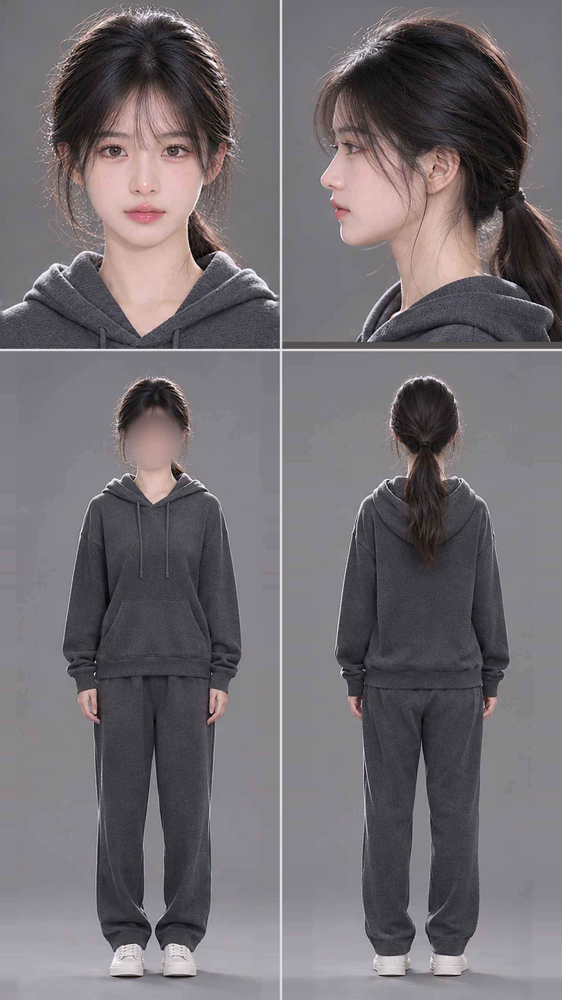
温以宁（Vigil）｜身份母版
制作参考图（按顺序上传） · 1项
- 图1 · 温以宁｜本人正脸原图
原始来源仅锁定本人高清面孔、发际线、肤色与身份。
四格制作提示词
【参考图按顺序上传】图1为本人正脸肖像，仅锁定本人高清身份；衣装与妆发按下述已确认设计。 一张杂志级棚拍真人身份设定板，人物为温以宁。图1是本人正脸参考。全画面采用真实棚拍的影调和自然景深。 以上传的本人正脸参考图锁定身份。四个取景区始终是参考图中的同一人，同一张脸。保留原图的脸部比例和本人辨识度，正脸优先忠实复现参考，侧面与背面按同一身份和发型延续。 发型和配饰按本人参考图延续。四格均穿同一套无标志中性服饰，肩线与袖口自然起褶。站姿放松，双手空着。 中性浅灰无缝棚底。大型柔光箱从正面偏上打亮，侧后同向轮廓光轻勾发丝和肩线，明暗过渡柔和。脸部特写用等效 85mm 人像视角，对焦双眼或相应发型细节；前后全身相机保持同一水平与人物尺度，头顶、鞋底均在画内。 【四格交付硬约束】只输出一张竖版9:16 PNG，1440×2560（2K级）。左右两列等宽，上排约占全高35%，下排约占65%，四格紧凑排列，细窄中性分隔线。左上为高清正面头肩近景；右上为高清四分之三侧脸头肩近景，转头约45°，不是90°纯侧脸。上排清楚呈现同一演员的五官、皮肤纹理、妆发、发际线及贴脸配饰，头顶与发饰完整，不磨皮、不模糊。左下为正面全身，右下为背面全身，头顶、鞋底与衣摆完整，等高、鞋底齐平、自然站姿，保持同一演员、同一套妆发、服装、鞋履、配饰与身材比例。下排只提供体态和服装信息：正面全身的面部五官区域主动做柔和局部高斯模糊，使眉眼鼻唇不可作为第二身份参考；脸部外轮廓、发际线、发型、耳饰、颈部与衣装保持清楚。背面全身保持真实后脑发型，若露出面部，仅模糊露出的五官。绝不模糊上排高清脸、头发、衣装、手脚或整张全身图。中性灰无缝棚底与同向柔光，真实材质，无文字、色卡、额外小格、水印或剧情场景；已有正式服装标志原样保留，不新增品牌。
欧阳嘉树（Rift）｜身份母版
制作参考图（按顺序上传） · 1项
- 图1 · 欧阳嘉树（Rift）｜已检出真人肖像原图
原始来源核对面部五官、真实皮肤和原始形象；这不是已验收的四格设定板成品Drive 正脸原图，设定板待生成
四格制作提示词
一张杂志级棚拍真人身份设定板，人物为欧阳嘉树。图1是本人正脸参考。全画面采用真实棚拍的影调和自然景深。 以上传的本人正脸参考图锁定身份。四个取景区始终是参考图中的同一人，同一张脸。保留原图的脸部比例和本人辨识度，正脸优先忠实复现参考，侧面与背面按同一身份和发型延续。 发型和配饰按本人参考图延续。四格均穿同一套无标志中性服饰，肩线与袖口自然起褶。站姿放松，双手空着。 中性浅灰无缝棚底。大型柔光箱从正面偏上打亮，侧后同向轮廓光轻勾发丝和肩线，明暗过渡柔和。脸部特写用等效 85mm 人像视角，对焦双眼或相应发型细节；前后全身相机保持同一水平与人物尺度，头顶、鞋底均在画内。 【四格交付硬约束】只输出一张竖版9:16 PNG，1440×2560（2K级）。左右两列等宽，上排约占全高35%，下排约占65%，四格紧凑排列，细窄中性分隔线。左上为高清正面头肩近景；右上为高清四分之三侧脸头肩近景，转头约45°，不是90°纯侧脸。上排清楚呈现同一演员的五官、皮肤纹理、妆发、发际线及贴脸配饰，头顶与发饰完整，不磨皮、不模糊。左下为正面全身，右下为背面全身，头顶、鞋底与衣摆完整，等高、鞋底齐平、自然站姿，保持同一演员、同一套妆发、服装、鞋履、配饰与身材比例。下排只提供体态和服装信息：正面全身的面部五官区域主动做柔和局部高斯模糊，使眉眼鼻唇不可作为第二身份参考；脸部外轮廓、发际线、发型、耳饰、颈部与衣装保持清楚。背面全身保持真实后脑发型，若露出面部，仅模糊露出的五官。绝不模糊上排高清脸、头发、衣装、手脚或整张全身图。中性灰无缝棚底与同向柔光，真实材质，无文字、色卡、额外小格、水印或剧情场景；已有正式服装标志原样保留，不新增品牌。
陆川（Ash）｜身份母版
制作参考图（按顺序上传） · 1项
- 图1 · 陆川（Ash）｜已检出真人肖像原图
原始来源核对面部五官、真实皮肤和原始形象；这不是已验收的四格设定板成品Drive 正脸原图，设定板待生成
四格制作提示词
一张杂志级棚拍真人身份设定板，人物为陆川。图1是本人正脸参考。全画面采用真实棚拍的影调和自然景深。 以上传的本人正脸参考图锁定身份。四个取景区始终是参考图中的同一人，同一张脸。保留原图的脸部比例和本人辨识度，正脸优先忠实复现参考，侧面与背面按同一身份和发型延续。 发型和配饰按本人参考图延续。四格均穿同一套无标志中性服饰，肩线与袖口自然起褶。站姿放松，双手空着。 中性浅灰无缝棚底。大型柔光箱从正面偏上打亮，侧后同向轮廓光轻勾发丝和肩线，明暗过渡柔和。脸部特写用等效 85mm 人像视角，对焦双眼或相应发型细节；前后全身相机保持同一水平与人物尺度，头顶、鞋底均在画内。 【四格交付硬约束】只输出一张竖版9:16 PNG，1440×2560（2K级）。左右两列等宽，上排约占全高35%，下排约占65%，四格紧凑排列，细窄中性分隔线。左上为高清正面头肩近景；右上为高清四分之三侧脸头肩近景，转头约45°，不是90°纯侧脸。上排清楚呈现同一演员的五官、皮肤纹理、妆发、发际线及贴脸配饰，头顶与发饰完整，不磨皮、不模糊。左下为正面全身，右下为背面全身，头顶、鞋底与衣摆完整，等高、鞋底齐平、自然站姿，保持同一演员、同一套妆发、服装、鞋履、配饰与身材比例。下排只提供体态和服装信息：正面全身的面部五官区域主动做柔和局部高斯模糊，使眉眼鼻唇不可作为第二身份参考；脸部外轮廓、发际线、发型、耳饰、颈部与衣装保持清楚。背面全身保持真实后脑发型，若露出面部，仅模糊露出的五官。绝不模糊上排高清脸、头发、衣装、手脚或整张全身图。中性灰无缝棚底与同向柔光，真实材质，无文字、色卡、额外小格、水印或剧情场景；已有正式服装标志原样保留，不新增品牌。
贺之扬（Blaze）｜身份母版
制作参考图（按顺序上传） · 1项
- 图1 · 贺之扬（Blaze）｜已检出真人肖像原图
原始来源核对面部五官、真实皮肤和原始形象；这不是已验收的四格设定板成品Drive 正脸原图，设定板待生成
四格制作提示词
一张杂志级棚拍真人身份设定板，人物为贺之扬。图1是本人正脸参考。全画面采用真实棚拍的影调和自然景深。 以上传的本人正脸参考图锁定身份。四个取景区始终是参考图中的同一人，同一张脸。保留原图的脸部比例和本人辨识度，正脸优先忠实复现参考，侧面与背面按同一身份和发型延续。 发型和配饰按本人参考图延续。四格均穿同一套无标志中性服饰，肩线与袖口自然起褶。站姿放松，双手空着。 中性浅灰无缝棚底。大型柔光箱从正面偏上打亮，侧后同向轮廓光轻勾发丝和肩线，明暗过渡柔和。脸部特写用等效 85mm 人像视角，对焦双眼或相应发型细节；前后全身相机保持同一水平与人物尺度，头顶、鞋底均在画内。 【四格交付硬约束】只输出一张竖版9:16 PNG，1440×2560（2K级）。左右两列等宽，上排约占全高35%，下排约占65%，四格紧凑排列，细窄中性分隔线。左上为高清正面头肩近景；右上为高清四分之三侧脸头肩近景，转头约45°，不是90°纯侧脸。上排清楚呈现同一演员的五官、皮肤纹理、妆发、发际线及贴脸配饰，头顶与发饰完整，不磨皮、不模糊。左下为正面全身，右下为背面全身，头顶、鞋底与衣摆完整，等高、鞋底齐平、自然站姿，保持同一演员、同一套妆发、服装、鞋履、配饰与身材比例。下排只提供体态和服装信息：正面全身的面部五官区域主动做柔和局部高斯模糊，使眉眼鼻唇不可作为第二身份参考；脸部外轮廓、发际线、发型、耳饰、颈部与衣装保持清楚。背面全身保持真实后脑发型，若露出面部，仅模糊露出的五官。绝不模糊上排高清脸、头发、衣装、手脚或整张全身图。中性灰无缝棚底与同向柔光，真实材质，无文字、色卡、额外小格、水印或剧情场景；已有正式服装标志原样保留，不新增品牌。
顾行舟（Crown）｜身份母版
制作参考图（按顺序上传） · 1项
- 图1 · 顾行舟（Crown）｜已检出真人肖像原图
原始来源核对面部五官、真实皮肤和原始形象；这不是已验收的四格设定板成品Drive 正脸原图，设定板待生成
四格制作提示词
一张杂志级棚拍真人身份设定板，人物为顾行舟。图1是本人正脸参考。全画面采用真实棚拍的影调和自然景深。 以上传的本人正脸参考图锁定身份。四个取景区始终是参考图中的同一人，同一张脸。保留原图的脸部比例和本人辨识度，正脸优先忠实复现参考，侧面与背面按同一身份和发型延续。 发型和配饰按本人参考图延续。四格均穿同一套无标志中性服饰，肩线与袖口自然起褶。站姿放松，双手空着。 中性浅灰无缝棚底。大型柔光箱从正面偏上打亮，侧后同向轮廓光轻勾发丝和肩线，明暗过渡柔和。脸部特写用等效 85mm 人像视角，对焦双眼或相应发型细节；前后全身相机保持同一水平与人物尺度，头顶、鞋底均在画内。 【四格交付硬约束】只输出一张竖版9:16 PNG，1440×2560（2K级）。左右两列等宽，上排约占全高35%，下排约占65%，四格紧凑排列，细窄中性分隔线。左上为高清正面头肩近景；右上为高清四分之三侧脸头肩近景，转头约45°，不是90°纯侧脸。上排清楚呈现同一演员的五官、皮肤纹理、妆发、发际线及贴脸配饰，头顶与发饰完整，不磨皮、不模糊。左下为正面全身，右下为背面全身，头顶、鞋底与衣摆完整，等高、鞋底齐平、自然站姿，保持同一演员、同一套妆发、服装、鞋履、配饰与身材比例。下排只提供体态和服装信息：正面全身的面部五官区域主动做柔和局部高斯模糊，使眉眼鼻唇不可作为第二身份参考；脸部外轮廓、发际线、发型、耳饰、颈部与衣装保持清楚。背面全身保持真实后脑发型，若露出面部，仅模糊露出的五官。绝不模糊上排高清脸、头发、衣装、手脚或整张全身图。中性灰无缝棚底与同向柔光，真实材质，无文字、色卡、额外小格、水印或剧情场景；已有正式服装标志原样保留，不新增品牌。
周牧（MuZ）｜身份母版
制作参考图（按顺序上传） · 1项
- 图1 · 周牧（MuZ）｜经过确认的演员本人正脸原图
原始来源锁真人面孔；缺原图时不可随机生成另一张脸当本人Drive 正脸原图，设定板待生成
四格制作提示词
一张杂志级棚拍真人身份设定板，人物为周牧。图1是本人正脸参考。全画面采用真实棚拍的影调和自然景深。 以上传的本人正脸参考图锁定身份。四个取景区始终是参考图中的同一人，同一张脸。保留原图的脸部比例和本人辨识度，正脸优先忠实复现参考，侧面与背面按同一身份和发型延续。 发型和配饰按本人参考图延续。四格均穿同一套无标志中性服饰，肩线与袖口自然起褶。站姿放松，双手空着。 中性浅灰无缝棚底。大型柔光箱从正面偏上打亮，侧后同向轮廓光轻勾发丝和肩线，明暗过渡柔和。脸部特写用等效 85mm 人像视角，对焦双眼或相应发型细节；前后全身相机保持同一水平与人物尺度，头顶、鞋底均在画内。 【四格交付硬约束】只输出一张竖版9:16 PNG，1440×2560（2K级）。左右两列等宽，上排约占全高35%，下排约占65%，四格紧凑排列，细窄中性分隔线。左上为高清正面头肩近景；右上为高清四分之三侧脸头肩近景，转头约45°，不是90°纯侧脸。上排清楚呈现同一演员的五官、皮肤纹理、妆发、发际线及贴脸配饰，头顶与发饰完整，不磨皮、不模糊。左下为正面全身，右下为背面全身，头顶、鞋底与衣摆完整，等高、鞋底齐平、自然站姿，保持同一演员、同一套妆发、服装、鞋履、配饰与身材比例。下排只提供体态和服装信息：正面全身的面部五官区域主动做柔和局部高斯模糊，使眉眼鼻唇不可作为第二身份参考；脸部外轮廓、发际线、发型、耳饰、颈部与衣装保持清楚。背面全身保持真实后脑发型，若露出面部，仅模糊露出的五官。绝不模糊上排高清脸、头发、衣装、手脚或整张全身图。中性灰无缝棚底与同向柔光，真实材质，无文字、色卡、额外小格、水印或剧情场景；已有正式服装标志原样保留，不新增品牌。
谭屹（Yi7）｜身份母版
制作参考图（按顺序上传） · 1项
- 图1 · 谭屹（Yi7）｜经过确认的演员本人正脸原图
原始来源锁真人面孔；缺原图时不可随机生成另一张脸当本人Drive 正脸原图，设定板待生成
四格制作提示词
一张杂志级棚拍真人身份设定板，人物为谭屹。图1是本人正脸参考。全画面采用真实棚拍的影调和自然景深。 以上传的本人正脸参考图锁定身份。四个取景区始终是参考图中的同一人，同一张脸。保留原图的脸部比例和本人辨识度，正脸优先忠实复现参考，侧面与背面按同一身份和发型延续。 发型和配饰按本人参考图延续。四格均穿同一套无标志中性服饰，肩线与袖口自然起褶。站姿放松，双手空着。 中性浅灰无缝棚底。大型柔光箱从正面偏上打亮，侧后同向轮廓光轻勾发丝和肩线，明暗过渡柔和。脸部特写用等效 85mm 人像视角，对焦双眼或相应发型细节；前后全身相机保持同一水平与人物尺度，头顶、鞋底均在画内。 【四格交付硬约束】只输出一张竖版9:16 PNG，1440×2560（2K级）。左右两列等宽，上排约占全高35%，下排约占65%，四格紧凑排列，细窄中性分隔线。左上为高清正面头肩近景；右上为高清四分之三侧脸头肩近景，转头约45°，不是90°纯侧脸。上排清楚呈现同一演员的五官、皮肤纹理、妆发、发际线及贴脸配饰，头顶与发饰完整，不磨皮、不模糊。左下为正面全身，右下为背面全身，头顶、鞋底与衣摆完整，等高、鞋底齐平、自然站姿，保持同一演员、同一套妆发、服装、鞋履、配饰与身材比例。下排只提供体态和服装信息：正面全身的面部五官区域主动做柔和局部高斯模糊，使眉眼鼻唇不可作为第二身份参考；脸部外轮廓、发际线、发型、耳饰、颈部与衣装保持清楚。背面全身保持真实后脑发型，若露出面部，仅模糊露出的五官。绝不模糊上排高清脸、头发、衣装、手脚或整张全身图。中性灰无缝棚底与同向柔光，真实材质，无文字、色卡、额外小格、水印或剧情场景；已有正式服装标志原样保留，不新增品牌。
秦岳｜身份母版
制作参考图（按顺序上传） · 1项
- 图1 · 秦岳｜经过确认的演员本人正脸原图
原始来源锁真人面孔；缺原图时不可随机生成另一张脸当本人Drive 正脸原图，设定板待生成
四格制作提示词
一张杂志级棚拍真人身份设定板，人物为秦岳。图1是本人正脸参考。全画面采用真实棚拍的影调和自然景深。 以上传的本人正脸参考图锁定身份。四个取景区始终是参考图中的同一人，同一张脸。保留原图的脸部比例和本人辨识度，正脸优先忠实复现参考，侧面与背面按同一身份和发型延续。 发型和配饰按本人参考图延续。四格均穿同一套无标志中性服饰，肩线与袖口自然起褶。站姿放松，双手空着。 中性浅灰无缝棚底。大型柔光箱从正面偏上打亮，侧后同向轮廓光轻勾发丝和肩线，明暗过渡柔和。脸部特写用等效 85mm 人像视角，对焦双眼或相应发型细节；前后全身相机保持同一水平与人物尺度，头顶、鞋底均在画内。 【四格交付硬约束】只输出一张竖版9:16 PNG，1440×2560（2K级）。左右两列等宽，上排约占全高35%，下排约占65%，四格紧凑排列，细窄中性分隔线。左上为高清正面头肩近景；右上为高清四分之三侧脸头肩近景，转头约45°，不是90°纯侧脸。上排清楚呈现同一演员的五官、皮肤纹理、妆发、发际线及贴脸配饰，头顶与发饰完整，不磨皮、不模糊。左下为正面全身，右下为背面全身，头顶、鞋底与衣摆完整，等高、鞋底齐平、自然站姿，保持同一演员、同一套妆发、服装、鞋履、配饰与身材比例。下排只提供体态和服装信息：正面全身的面部五官区域主动做柔和局部高斯模糊，使眉眼鼻唇不可作为第二身份参考；脸部外轮廓、发际线、发型、耳饰、颈部与衣装保持清楚。背面全身保持真实后脑发型，若露出面部，仅模糊露出的五官。绝不模糊上排高清脸、头发、衣装、手脚或整张全身图。中性灰无缝棚底与同向柔光，真实材质，无文字、色卡、额外小格、水印或剧情场景；已有正式服装标志原样保留，不新增品牌。
03 · 现实人物妆造设定板
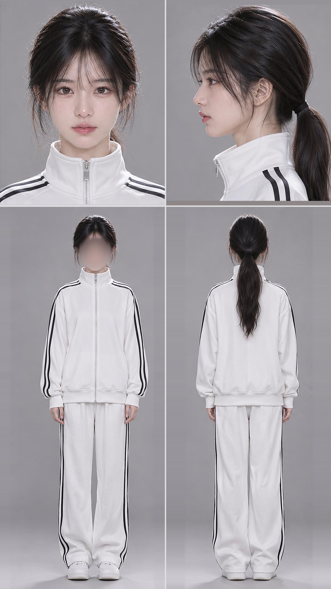
温以宁（Vigil）｜ZG 基地私服定妆板
【参考图按顺序上传】图1为本人正脸肖像，仅锁定本人高清身份；衣装与妆发按下述已确认设计。 一张真实棚拍的现实妆造设定板，人物为温以宁。 本人参考锁脸。保留参考发色、发长、分缝及后脑发流，梳顺鬓边，露出眼睛。薄透底妆仅压额头与鼻翼油光，保留皮肤纹理；自然梳眉，唇部保留原生色。 【ZG 时期现实妆造】白底黑线的宽松运动私服。白色高立领全拉链上衣拉至领口，衣摆盖住裤腰，袖口和下摆微收，袖口有轻微洗旧起毛。双肩外侧各有两道细黑织带，沿袖外缝平行延伸至袖口。配同面料白色宽直筒长裤，裤外缝两道细黑织带从腰侧延伸到裤脚，裤脚轻搭白色低帮运动鞋。面料是有垂感的哑光运动针织，立领和袖口略厚，胸背纯白。穿着中性、遮盖完整，轮廓宽松。大堂、训练室、办公室和楼梯间沿用同一套，ZG 外设包单独制作。 中性浅灰无缝影棚，正面偏上大型柔光箱，侧后低强度轮廓光。自然站立，摄影机保持水平。【四格交付硬约束】只输出一张竖版9:16 PNG，1440×2560（2K级）。左右两列等宽，上排约占全高35%，下排约占65%，四格紧凑排列，细窄中性分隔线。左上为高清正面头肩近景；右上为高清四分之三侧脸头肩近景，转头约45°，不是90°纯侧脸。上排清楚呈现同一演员的五官、皮肤纹理、妆发、发际线及贴脸配饰，头顶与发饰完整，不磨皮、不模糊。左下为正面全身，右下为背面全身，头顶、鞋底与衣摆完整，等高、鞋底齐平、自然站姿，保持同一演员、同一套妆发、服装、鞋履、配饰与身材比例。下排只提供体态和服装信息：正面全身的面部五官区域主动做柔和局部高斯模糊，使眉眼鼻唇不可作为第二身份参考；脸部外轮廓、发际线、发型、耳饰、颈部与衣装保持清楚。背面全身保持真实后脑发型，若露出面部，仅模糊露出的五官。绝不模糊上排高清脸、头发、衣装、手脚或整张全身图。中性灰无缝棚底与同向柔光，真实材质，无文字、色卡、额外小格、水印或剧情场景；已有正式服装标志原样保留，不新增品牌。 【妆造材质与上镜细节】以温以宁本人正脸与发型参考锁定身份，保留本人分缝、发长和发流。薄透底妆，保留肤色和皮肤纹理。正面与背面的领口、肩缝、裤线、鞋与上衣开合保持一致。设定板双手空着。用户提供图仅用于核对运动套装的高立领、宽松版型和黑线走向。真人面容、发型、身高比例和四格排版按本卡要求。
制作参考图（按顺序上传） · 1项
- 图1 · 温以宁｜本人正脸原图
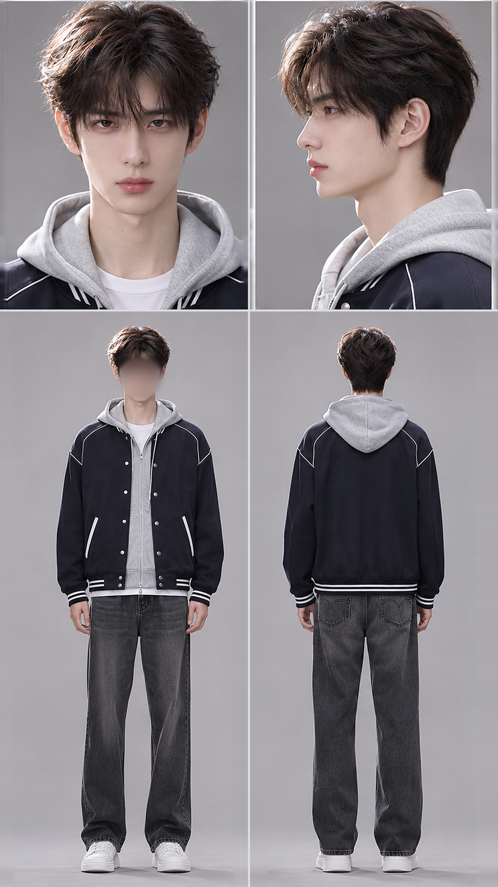
顾行舟（Crown）｜ZG 基地私服定妆板
【参考图按顺序上传】图1为本人正脸肖像，仅锁定本人高清身份；衣装与妆发按下述已确认设计。 一张杂志级棚拍现实妆造设定板，人物为顾行舟。图1是本人正脸参考。全画面采用真实棚拍的影调和自然景深。 以上传的本人正脸参考图锁定身份。四个取景区始终是参考图中的同一人，同一张脸。保留原图的脸部比例和本人辨识度，正脸优先忠实复现参考，侧面与背面按同一身份和发型延续。 顾行舟留自然黑色层次短发，顶部蓬松但有重量，碎发从头顶向额前散落，中间几束斜落至眉上，两侧留少量鬓发。耳后与后颈收短，正面与背面发长一致。图1为身份参考，用来锁定顾行舟的本人五官、瞳色、肤色、发际线和真人比例。第 1 集广告发型和妆面按宣传镜头另做。 顾行舟第 1 集基地私服，整个搭配是藏蓝、浅灰、白和水洗炭灰。最外面穿一件藏蓝按扣棒球夹克，衣身和袖子同色，棉质哑光，肩线微落，衣摆到胯部。前襟敞开，两侧可见小银色圆按扣；肩袖接缝有细浅灰滚线，两侧斜插袋各有一道白色窄边。领口、袖口和下摆用藏蓝罗纹，两道细白横条沿边收口。内层是一件浅灰棉质拉链帽衫，前襟微开，灰帽翻到夹克外，在后颈形成宽而软的三角层，帽绳两端自然落在胸前。最里层穿纯白圆领棉 T，领口在灰帽衫开口处露出弧线，下摆比夹克略长，在腰下露出一条短白边。下身穿水洗炭灰宽直牛仔，裤腿从大腿到脚踝保持宽直，只有鞋面处自然堆褶。白色低帮系带运动鞋，白鞋面和浅灰橡胶底。正面清楚读到藏蓝外层、浅灰中层、白色内层；侧面能看出短夹克和稍长白 T 的落差；背面可见完整灰帽、条纹罗纹下摆和短白边。双手自然垂放，保留衣片、口袋与落肩线的可见性。第 1 集赞助广告使用广告镜头的衣装与战队耳机。 私服整套无队标、赞助标志或选手 ID。 同一人以自然站姿拍摄，双手空着，服装在所有面板保持同一版型和状态。 中性浅灰无缝棚底。大型柔光箱从正面偏上打亮，侧后同向轮廓光轻勾发丝和肩线，明暗过渡柔和。脸部特写用等效 85mm 人像视角，对焦双眼或相应发型细节；前后全身相机保持同一水平与人物尺度，头顶、鞋底均在画内。 【四格交付硬约束】只输出一张竖版9:16 PNG，1440×2560（2K级）。左右两列等宽，上排约占全高35%，下排约占65%，四格紧凑排列，细窄中性分隔线。左上为高清正面头肩近景；右上为高清四分之三侧脸头肩近景，转头约45°，不是90°纯侧脸。上排清楚呈现同一演员的五官、皮肤纹理、妆发、发际线及贴脸配饰，头顶与发饰完整，不磨皮、不模糊。左下为正面全身，右下为背面全身，头顶、鞋底与衣摆完整，等高、鞋底齐平、自然站姿，保持同一演员、同一套妆发、服装、鞋履、配饰与身材比例。下排只提供体态和服装信息：正面全身的面部五官区域主动做柔和局部高斯模糊，使眉眼鼻唇不可作为第二身份参考；脸部外轮廓、发际线、发型、耳饰、颈部与衣装保持清楚。背面全身保持真实后脑发型，若露出面部，仅模糊露出的五官。绝不模糊上排高清脸、头发、衣装、手脚或整张全身图。中性灰无缝棚底与同向柔光，真实材质，无文字、色卡、额外小格、水印或剧情场景；已有正式服装标志原样保留，不新增品牌。 【妆发执行】本人参考锁脸。锁定本人五官、发际线和年龄辨识度。日常发型随场次调整，同一连续场内保持妆发与服装连戏。跨天或时间跳转按场次换私服。正式赛场另做赛前妆发，按赛季调用队服。薄透底妆仅压额头与鼻翼油光，保留皮肤纹理；自然梳眉，唇部保留原生色。裤脚自然落在鞋面上，全身三个视图保持衣料、接缝和鞋面一致。 【妆造材质与上镜细节】底妆薄铺，鼻翼局部定妆，颧部保留轻微自然光泽；皮肤纹理与本人参考一致。日常衣料按上文呈现。上衣腋下和腰腹留出坐姿及抬臂空间。
制作参考图（按顺序上传） · 1项
- 图1 · 顾行舟｜本人正脸原图
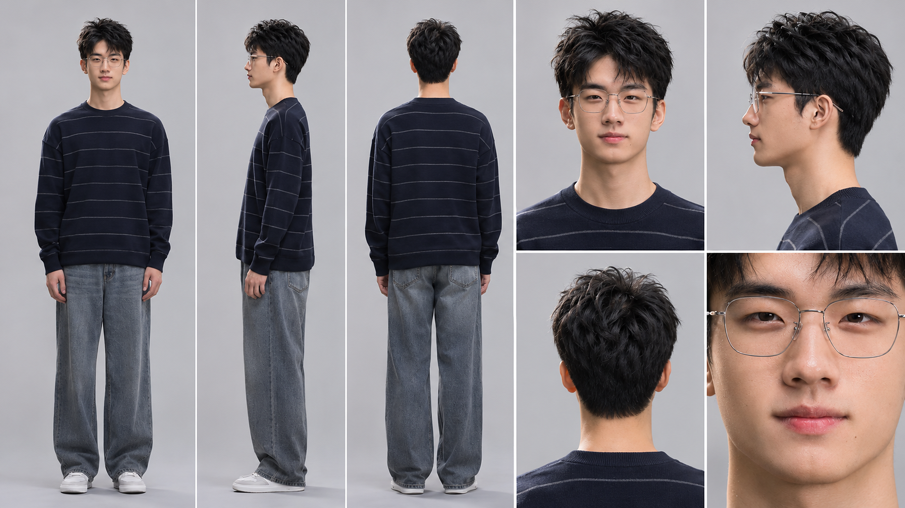
陆川（Ash）｜ZG 基地私服定妆板
【参考图按顺序上传】图1为本人正脸肖像，仅锁定本人高清身份；衣装与妆发按下述已确认设计。 一张杂志级棚拍现实妆造设定板，人物为陆川。图1是本人正脸参考。全画面采用真实棚拍的影调和自然景深。 以上传的本人正脸参考图锁定身份。四个取景区始终是参考图中的同一人，同一张脸。保留原图的脸部比例和本人辨识度，正脸优先忠实复现参考，侧面与背面按同一身份和发型延续。 发型与日常妆容沿用本人参考。陆川基地私服：深蓝细横条长袖针织上衣，轻落肩，下摆自然盖过胯骨，配冷灰蓝宽直牛仔裤和灰白薄底鞋。条纹细且间距疏，裤脚在鞋面压一道自然褶。保留本人眼镜。 私服整套无队标、赞助标志或选手 ID。 同一人以自然站姿拍摄，双手空着，服装在所有面板保持同一版型和状态。 中性浅灰无缝棚底。大型柔光箱从正面偏上打亮，侧后同向轮廓光轻勾发丝和肩线，明暗过渡柔和。脸部特写用等效 85mm 人像视角，对焦双眼或相应发型细节；前后全身相机保持同一水平与人物尺度，头顶、鞋底均在画内。 【四格交付硬约束】只输出一张竖版9:16 PNG，1440×2560（2K级）。左右两列等宽，上排约占全高35%，下排约占65%，四格紧凑排列，细窄中性分隔线。左上为高清正面头肩近景；右上为高清四分之三侧脸头肩近景，转头约45°，不是90°纯侧脸。上排清楚呈现同一演员的五官、皮肤纹理、妆发、发际线及贴脸配饰，头顶与发饰完整，不磨皮、不模糊。左下为正面全身，右下为背面全身，头顶、鞋底与衣摆完整，等高、鞋底齐平、自然站姿，保持同一演员、同一套妆发、服装、鞋履、配饰与身材比例。下排只提供体态和服装信息：正面全身的面部五官区域主动做柔和局部高斯模糊，使眉眼鼻唇不可作为第二身份参考；脸部外轮廓、发际线、发型、耳饰、颈部与衣装保持清楚。背面全身保持真实后脑发型，若露出面部，仅模糊露出的五官。绝不模糊上排高清脸、头发、衣装、手脚或整张全身图。中性灰无缝棚底与同向柔光，真实材质，无文字、色卡、额外小格、水印或剧情场景；已有正式服装标志原样保留，不新增品牌。 【妆发执行】本人参考锁脸。保留参考发色、发长、分缝及后脑发流，梳顺鬓边，露出眼睛。薄透底妆仅压额头与鼻翼油光，保留皮肤纹理；自然梳眉，唇部保留原生色。裤脚自然落在鞋面上，全身三个视图保持衣料、接缝和鞋面一致。 【妆造材质与上镜细节】底妆薄铺，鼻翼局部定妆，颧部保留轻微自然光泽；皮肤纹理与本人参考一致。日常衣料按上文呈现。上衣腋下和腰腹留出坐姿及抬臂空间。
制作参考图（按顺序上传） · 1项
- 图1 · 陆川｜本人正脸原图
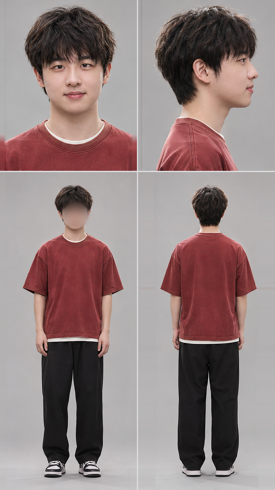
贺之扬（Blaze）｜ZG 基地私服定妆板
【参考图按顺序上传】图1为本人正脸肖像，仅锁定本人高清身份；衣装与妆发按下述已确认设计。 一张杂志级棚拍现实妆造设定板，人物为贺之扬。图1是本人正脸参考。全画面采用真实棚拍的影调和自然景深。 以上传的本人正脸参考图锁定身份。四个取景区始终是参考图中的同一人，同一张脸。保留原图的脸部比例和本人辨识度，正脸优先忠实复现参考，侧面与背面按同一身份和发型延续。 贺之扬第 1 集用自然向前的短碎发，发顶稍松，鬓边清爽。 贺之扬基地私服：洗旧砖红宽短棉 T，袖口至上臂中段，底下叠一层略露衣摆的暖白圆领薄 T，配黑色宽松运动裤和黑白低帮鞋。红色集中在上身，裤腿自然落到鞋面。 私服整套无队标、赞助标志或选手 ID。 同一人以自然站姿拍摄，双手空着，服装在所有面板保持同一版型和状态。 中性浅灰无缝棚底。大型柔光箱从正面偏上打亮，侧后同向轮廓光轻勾发丝和肩线，明暗过渡柔和。脸部特写用等效 85mm 人像视角，对焦双眼或相应发型细节；前后全身相机保持同一水平与人物尺度，头顶、鞋底均在画内。 【四格交付硬约束】只输出一张竖版9:16 PNG，1440×2560（2K级）。左右两列等宽，上排约占全高35%，下排约占65%，四格紧凑排列，细窄中性分隔线。左上为高清正面头肩近景；右上为高清四分之三侧脸头肩近景，转头约45°，不是90°纯侧脸。上排清楚呈现同一演员的五官、皮肤纹理、妆发、发际线及贴脸配饰，头顶与发饰完整，不磨皮、不模糊。左下为正面全身，右下为背面全身，头顶、鞋底与衣摆完整，等高、鞋底齐平、自然站姿，保持同一演员、同一套妆发、服装、鞋履、配饰与身材比例。下排只提供体态和服装信息：正面全身的面部五官区域主动做柔和局部高斯模糊，使眉眼鼻唇不可作为第二身份参考；脸部外轮廓、发际线、发型、耳饰、颈部与衣装保持清楚。背面全身保持真实后脑发型，若露出面部，仅模糊露出的五官。绝不模糊上排高清脸、头发、衣装、手脚或整张全身图。中性灰无缝棚底与同向柔光，真实材质，无文字、色卡、额外小格、水印或剧情场景；已有正式服装标志原样保留，不新增品牌。 【妆发执行】本人参考锁脸。锁定本人五官、发际线和年龄辨识度。日常发型随场次调整，同一连续场内保持妆发与服装连戏。跨天或时间跳转按场次换私服。正式赛场另做赛前妆发，按赛季调用队服。薄透底妆仅压额头与鼻翼油光，保留皮肤纹理；自然梳眉，唇部保留原生色。裤脚自然落在鞋面上，全身三个视图保持衣料、接缝和鞋面一致。 【妆造材质与上镜细节】底妆薄铺，鼻翼局部定妆，颧部保留轻微自然光泽；皮肤纹理与本人参考一致。日常衣料按上文呈现。上衣腋下和腰腹留出坐姿及抬臂空间。
制作参考图（按顺序上传） · 1项
- 图1 · 贺之扬｜本人正脸原图
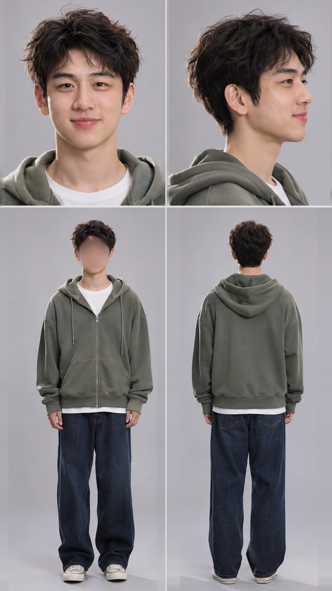
周牧（MuZ）｜ZG 基地私服定妆板
【参考图按顺序上传】图1为本人正脸肖像，仅锁定本人高清身份；衣装与妆发按下述已确认设计。 一张杂志级棚拍现实妆造设定板，人物为周牧。图1是本人正脸参考。全画面采用真实棚拍的影调和自然景深。 以上传的本人正脸参考图锁定身份。四个取景区始终是参考图中的同一人，同一张脸。保留原图的脸部比例和本人辨识度，正脸优先忠实复现参考，侧面与背面按同一身份和发型延续。 周牧第 1 集用松散自然刘海，额头露一小段，顶部保留轻微睡乱感。 周牧基地私服：雾绿宽身拉链帽衫，拉链开到胸口，白棉 T 从领口和衣摆露边。配深蓝宽直牛仔裤与米白帆布鞋。帽子平放在背上，上下身之间保留一道明亮白边。 私服整套无队标、赞助标志或选手 ID。 同一人以自然站姿拍摄，双手空着，服装在所有面板保持同一版型和状态。 中性浅灰无缝棚底。大型柔光箱从正面偏上打亮，侧后同向轮廓光轻勾发丝和肩线，明暗过渡柔和。脸部特写用等效 85mm 人像视角，对焦双眼或相应发型细节；前后全身相机保持同一水平与人物尺度，头顶、鞋底均在画内。 【四格交付硬约束】只输出一张竖版9:16 PNG，1440×2560（2K级）。左右两列等宽，上排约占全高35%，下排约占65%，四格紧凑排列，细窄中性分隔线。左上为高清正面头肩近景；右上为高清四分之三侧脸头肩近景，转头约45°，不是90°纯侧脸。上排清楚呈现同一演员的五官、皮肤纹理、妆发、发际线及贴脸配饰，头顶与发饰完整，不磨皮、不模糊。左下为正面全身，右下为背面全身，头顶、鞋底与衣摆完整，等高、鞋底齐平、自然站姿，保持同一演员、同一套妆发、服装、鞋履、配饰与身材比例。下排只提供体态和服装信息：正面全身的面部五官区域主动做柔和局部高斯模糊，使眉眼鼻唇不可作为第二身份参考；脸部外轮廓、发际线、发型、耳饰、颈部与衣装保持清楚。背面全身保持真实后脑发型，若露出面部，仅模糊露出的五官。绝不模糊上排高清脸、头发、衣装、手脚或整张全身图。中性灰无缝棚底与同向柔光，真实材质，无文字、色卡、额外小格、水印或剧情场景；已有正式服装标志原样保留，不新增品牌。 【妆发执行】本人参考锁脸。锁定本人五官、发际线和年龄辨识度。日常发型随场次调整，同一连续场内保持妆发与服装连戏。跨天或时间跳转按场次换私服。正式赛场另做赛前妆发，按赛季调用队服。薄透底妆仅压额头与鼻翼油光，保留皮肤纹理；自然梳眉，唇部保留原生色。裤脚自然落在鞋面上，全身三个视图保持衣料、接缝和鞋面一致。 【妆造材质与上镜细节】底妆薄铺，鼻翼局部定妆，颧部保留轻微自然光泽；皮肤纹理与本人参考一致。日常衣料按上文呈现。上衣腋下和腰腹留出坐姿及抬臂空间。
制作参考图（按顺序上传） · 1项
- 图1 · 周牧｜本人正脸原图
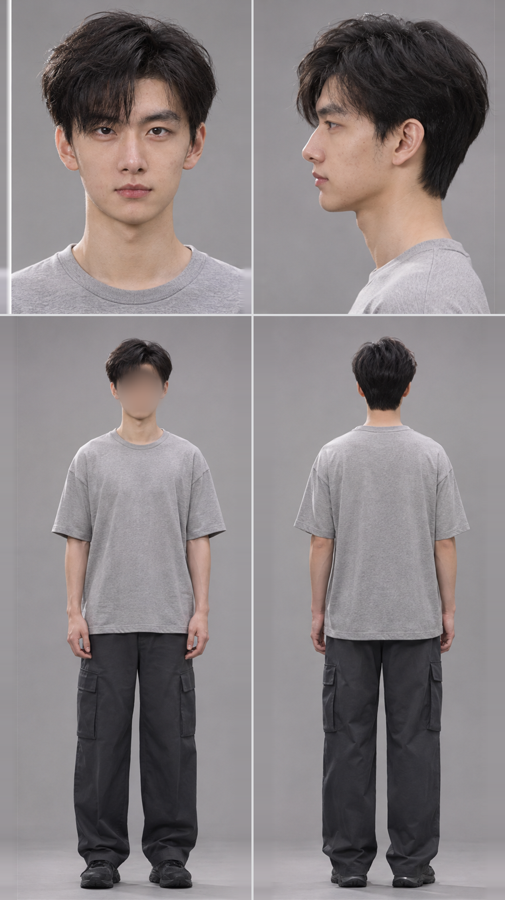
谭屹（Yi7）｜ZG 基地私服定妆板
【参考图按顺序上传】图1为本人正脸肖像，仅锁定本人高清身份；衣装与妆发按下述已确认设计。 一张杂志级棚拍现实妆造设定板，人物为谭屹。图1是本人正脸参考。全画面采用真实棚拍的影调和自然景深。 以上传的本人正脸参考图锁定身份。四个取景区始终是参考图中的同一人，同一张脸。保留原图的脸部比例和本人辨识度，正脸优先忠实复现参考，侧面与背面按同一身份和发型延续。 谭屹第 1 集用清爽短发，前额几束发丝稍向侧边拨开。 谭屹基地私服：浅灰落肩圆领棉 T，长度盖住裤腰。配石墨灰低调工装裤，腿形从臀至脚踝保持宽直，侧袋贴裤身。深色网面低帮鞋，裤脚形成一处自然堆褶。 私服整套无队标、赞助标志或选手 ID。 同一人以自然站姿拍摄，双手空着，服装在所有面板保持同一版型和状态。 中性浅灰无缝棚底。大型柔光箱从正面偏上打亮，侧后同向轮廓光轻勾发丝和肩线，明暗过渡柔和。脸部特写用等效 85mm 人像视角，对焦双眼或相应发型细节；前后全身相机保持同一水平与人物尺度，头顶、鞋底均在画内。 【四格交付硬约束】只输出一张竖版9:16 PNG，1440×2560（2K级）。左右两列等宽，上排约占全高35%，下排约占65%，四格紧凑排列，细窄中性分隔线。左上为高清正面头肩近景；右上为高清四分之三侧脸头肩近景，转头约45°，不是90°纯侧脸。上排清楚呈现同一演员的五官、皮肤纹理、妆发、发际线及贴脸配饰，头顶与发饰完整，不磨皮、不模糊。左下为正面全身，右下为背面全身，头顶、鞋底与衣摆完整，等高、鞋底齐平、自然站姿，保持同一演员、同一套妆发、服装、鞋履、配饰与身材比例。下排只提供体态和服装信息：正面全身的面部五官区域主动做柔和局部高斯模糊，使眉眼鼻唇不可作为第二身份参考；脸部外轮廓、发际线、发型、耳饰、颈部与衣装保持清楚。背面全身保持真实后脑发型，若露出面部，仅模糊露出的五官。绝不模糊上排高清脸、头发、衣装、手脚或整张全身图。中性灰无缝棚底与同向柔光，真实材质，无文字、色卡、额外小格、水印或剧情场景；已有正式服装标志原样保留，不新增品牌。 【妆发执行】本人参考锁脸。锁定本人五官、发际线和年龄辨识度。日常发型随场次调整，同一连续场内保持妆发与服装连戏。跨天或时间跳转按场次换私服。正式赛场另做赛前妆发，按赛季调用队服。薄透底妆仅压额头与鼻翼油光，保留皮肤纹理；自然梳眉，唇部保留原生色。裤脚自然落在鞋面上，全身三个视图保持衣料、接缝和鞋面一致。 【妆造材质与上镜细节】底妆薄铺，鼻翼局部定妆，颧部保留轻微自然光泽；皮肤纹理与本人参考一致。日常衣料按上文呈现。上衣腋下和腰腹留出坐姿及抬臂空间。
制作参考图（按顺序上传） · 1项
- 图1 · 谭屹｜本人正脸原图
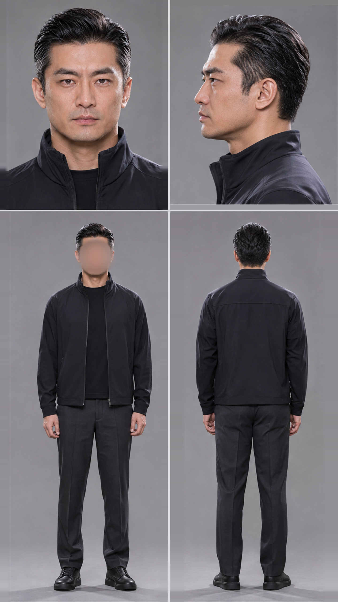
秦岳｜ZG 基地工作定妆板
【参考图按顺序上传】图1为本人正脸肖像，仅锁定本人高清身份；衣装与妆发按下述已确认设计。 一张杂志级棚拍现实妆造设定板，人物为秦岳。图1是本人正脸参考。全画面采用真实棚拍的影调和自然景深。 以上传的本人正脸参考图锁定身份。四个取景区始终是参考图中的同一人，同一张脸。保留原图的脸部比例和本人辨识度，正脸优先忠实复现参考，侧面与背面按同一身份和发型延续。 秦岳第 1 集用自然侧分短发，稍梳顺鬓角，保留本人发际与发量。 秦岳基地私服：深灰哑光短款拉链夹克，平肩，前襟打开留一整块黑色圆领内搭。配深灰垂直裤线长裤和黑色低帮鞋。夹克领型沿用本人原图。写字板仅在镜头中使用。 私服整套无队标、赞助标志或选手 ID。 同一人以自然站姿拍摄，双手空着，服装在所有面板保持同一版型和状态。 中性浅灰无缝棚底。大型柔光箱从正面偏上打亮，侧后同向轮廓光轻勾发丝和肩线，明暗过渡柔和。脸部特写用等效 85mm 人像视角，对焦双眼或相应发型细节；前后全身相机保持同一水平与人物尺度，头顶、鞋底均在画内。 【四格交付硬约束】只输出一张竖版9:16 PNG，1440×2560（2K级）。左右两列等宽，上排约占全高35%，下排约占65%，四格紧凑排列，细窄中性分隔线。左上为高清正面头肩近景；右上为高清四分之三侧脸头肩近景，转头约45°，不是90°纯侧脸。上排清楚呈现同一演员的五官、皮肤纹理、妆发、发际线及贴脸配饰，头顶与发饰完整，不磨皮、不模糊。左下为正面全身，右下为背面全身，头顶、鞋底与衣摆完整，等高、鞋底齐平、自然站姿，保持同一演员、同一套妆发、服装、鞋履、配饰与身材比例。下排只提供体态和服装信息：正面全身的面部五官区域主动做柔和局部高斯模糊，使眉眼鼻唇不可作为第二身份参考；脸部外轮廓、发际线、发型、耳饰、颈部与衣装保持清楚。背面全身保持真实后脑发型，若露出面部，仅模糊露出的五官。绝不模糊上排高清脸、头发、衣装、手脚或整张全身图。中性灰无缝棚底与同向柔光，真实材质，无文字、色卡、额外小格、水印或剧情场景；已有正式服装标志原样保留，不新增品牌。 【妆发执行】本人参考锁脸。锁定本人五官、发际线和年龄辨识度。日常发型随场次调整，同一连续场内保持妆发与服装连戏。跨天或时间跳转按场次换私服。正式赛场另做赛前妆发，按赛季调用队服。薄透底妆仅压额头与鼻翼油光，保留皮肤纹理；自然梳眉，唇部保留原生色。裤脚自然落在鞋面上，全身三个视图保持衣料、接缝和鞋面一致。 【妆造材质与上镜细节】底妆薄铺，鼻翼局部定妆，颧部保留轻微自然光泽；皮肤纹理与本人参考一致。教练夹克用哑光斜纹面料，前中拉链、平整肩线、短下摆；口袋开口靠侧缝，背片保留肩育克。
制作参考图（按顺序上传） · 1项
- 图1 · 秦岳｜本人正脸原图
04 · COS人物妆造设定板
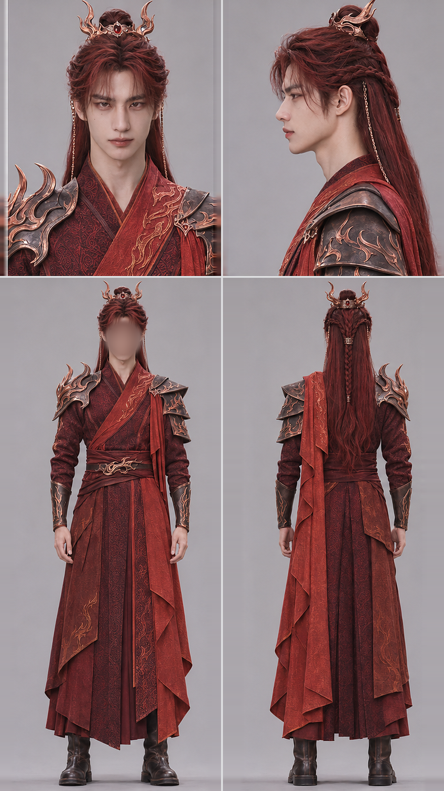
欧阳嘉树（Rift） × 伊格尼｜COS 定妆板
【参考图按顺序上传】图1为本人正脸肖像，仅锁定本人高清身份；衣装与妆发按下述已确认设计。 《天穹》第二年火系法师伊格尼，真人玄幻 COS 定妆板。图1只锁欧阳嘉树的本人脸、肤色和真人比例。全身首先读到暗红长发、不对称黑铜挑肩、收束的绛红衣身与朱砂红分片长袍。衣装造型与材质在灰底棚拍下直接可读。 【肩胸与腰】一眼先读出红发与宽肩下的绛红长袍。用暗酒红密织内袍铺出连续胸面，领部让一条较亮的朱砂红斜襟从右领越过胸口，到左腰收住，侧边与背面能追到同一条袍缘。左右黑铜肩件都有体积，但形状不同：右侧以一枚短厚上挑火脊拉宽肩线，左侧黑铜薄片从肩顶沿手臂外侧分两层压下，让朱红外袍搭过左肩露出一条宽布面。浮雕集中在肩件前后边缘，像压低的火舌回卷，墨铜凹槽配赤铜磨亮棱。胸腹以织锦为主，腰部用较宽的叠绕绛红织带束出收腰折褶，外扣扁长黑铜火纹扣。侧背能看见外袍在肩背和腰带下的固定位置，前襟、腰带与长摆有连续的叠压。 【袍摆与色块】主体是深绛长袍配暗色裤靴。前中从腰下开为两片，内层窄摆自然垂直，罩在外面的朱砂红宽袍片从左肩、左腰延伸到左后膝下。右腰另有一片暗赭红宽摆，向侧后下垂；背后分为两幅长摆，最长至脚踝上方。正面留出一条深色纵向内襟与完整靴面。前后全身和近景能看见布片一宽一窄、前后错长、里外相叠。袍身以分明的深绛、朱砂红和暗赭三个大色块组成，琥珀铜色只走外摆窄织边和少量火舌形提花，完整袍面仍然红。外袍以厚绢与哑光提花呈现自然重量，袍角用斜挑的两段弧形裁边，给生视频时的贴边火焰留下清楚轮廓。 【袖口与手】窄袖从肩饰下露出来，肘部可屈伸。黑铜护腕沿前臂外侧向肘部抬起，腕口略为退后，留出一段裸露腕部给蓄火和被缠腕的镜头。掌心、腕内侧和手指的轮廓清楚。定妆板呈现静态服装，火团、袍角火和火星解体在生视频时制作。 【妆发与棚拍】暗红及背长发，深栗色发根。双鬓细辫向后收拢，锤纹赤铜发冠以两片向上分开的火舌状铜翼托起短髻，冠前压一粒暗红晶石，左右各一条短细铜链落在耳后。背面可见辫束和冠翼固定处。底妆保留本人肤色与纹理，红棕眼尾、少量哑铜眼影与深暖中性唇。中性浅灰棚底，正面宽柔光与弱侧后光分辨黑铜、赤铜和织锦。各视图完整露出袍摆与鞋底。 【四格交付硬约束】只输出一张竖版9:16 PNG，1440×2560（2K级）。左右两列等宽，上排约占全高35%，下排约占65%，四格紧凑排列，细窄中性分隔线。左上为高清正面头肩近景；右上为高清四分之三侧脸头肩近景，转头约45°，不是90°纯侧脸。上排清楚呈现同一演员的五官、皮肤纹理、妆发、发际线及贴脸配饰，头顶与发饰完整，不磨皮、不模糊。左下为正面全身，右下为背面全身，头顶、鞋底与衣摆完整，等高、鞋底齐平、自然站姿，保持同一演员、同一套妆发、服装、鞋履、配饰与身材比例。下排只提供体态和服装信息：正面全身的面部五官区域主动做柔和局部高斯模糊，使眉眼鼻唇不可作为第二身份参考；脸部外轮廓、发际线、发型、耳饰、颈部与衣装保持清楚。背面全身保持真实后脑发型，若露出面部，仅模糊露出的五官。绝不模糊上排高清脸、头发、衣装、手脚或整张全身图。中性灰无缝棚底与同向柔光，真实材质，无文字、色卡、额外小格、水印或剧情场景；已有正式服装标志原样保留，不新增品牌。 【人物与武器分离】本张只展示演员本人及英雄衣装、妆发、固定穿戴饰件；双手空置自然下垂或微离身体。禁止手持、背挂、腰挂或悬浮任何独立武器、持物及动态技能效果。不为装备腾位置，不引入其他演员或武器参考图。固定在服装上的装甲、头冠、护腕、羽翼等既定穿戴结构保留；单独道具在其他资产任务制作，战斗镜头按需组合。
制作参考图（按顺序上传） · 1项
- 图1 · 欧阳嘉树｜本人正脸原图
独立武器/技能：伊格尼｜蓄火、袍角火与火星

温以宁（Vigil） × 绮罗｜COS 定妆板
【参考图按顺序上传】图1为本人正脸肖像，仅锁定本人高清身份；衣装与妆发按下述已确认设计。 《天穹》绮罗真人玄幻 COS 定妆设定板。图1锁定温以宁本人的脸、发际线、肤色与真人比例。设计一套月白、浅玉青、银色的露肩战斗仙裙。冰玉雕饰、压纹白缎和珠光薄纱在无特效的静态全身照里也能分出层次。 【主衣 · 浮雕战甲、玉雕腰封与修身裙裤】露肩抹胸式连体战甲裙。胸甲左右对称，主形是一对银雕凤翼，翼尖沿抹胸上缘向外上抬，羽片向胸前合拢，在中央扣住一枚浅玉青兰蕊。银甲边沿贴合身形，左右羽片之间露出月白暗纹真丝缎。金属为哑银，卷草纹凹处压暗，磨亮的棱边嵌少量冰青碎石。两肩外侧各立一枚薄银尖角肩甲，银色卷草沿尖角向后收拢，底层托住两片半透明玉叶。上胸与锁骨保持露肩，肩甲从上臂外侧向上起形。胸线以下收腰，接一掌宽的浅玉青镂雕腰封，前中嵌银质凤翼兰蕊徽，正面垂三枚错长的菱形玉坠，两侧细银流苏在上胯收住。腰封下是修身月白哑光缎面长裙裤，右前从大腿处开衩，雪白缎面有浅浅冰裂暗纹。月白缎面尖头细高跟，留细浅青搭带。 【披帛广袖与四层外裙】上臂的银镶玉叶扣各伸三缕细银链，接在离肩广袖的袖根。袖里一层贴臂冰绡，透过衣料能看见手臂；中层珠光白纱展成垂云大袖；最外层浅玉青渐染水光纱从袖后斜落，末端近地，裁成长短错落的柳叶尖。袖口银丝绣窄卷草暗纹，只在侧光下显现。手臂从袖前缘露出，小臂有哑银护腕和一粒冰青玉，指甲护套短而贴指。 白缎内裙之外有四层青白薄纱，浅青由腰际向月白裙边自然晕染。前两层从腰封两侧向前斜叠，前短后长，留出白缎裙身与高开衩。后两层由后腰向侧后张开，一层水光浅青纱与一层半透明珍珠母贝白纱，落至地面，边缘是错长的柳叶波浪弧，透光时呈淡青虹彩。正面看出胸腰的战甲结构和两片青纱，侧背看出近地长摆、分开的纱层和后腰固定点。四格保持同一造型，纱裙自然垂坠，鞋尖与细跟在正面全身图中可辨。 【手部】双手自然微离腰胯，露出手腕与十指，银镶浅玉窄腕饰贴腕；双手空置。 【妆发与棚拍】乌黑长发半挽，发髻内固定一整座银镶玉兰冠。正面是一道白银浮雕额弧，中央嵌一枚月白水滴玉，止于眉心上方。左右各三片半透明浅玉青长兰瓣，从太阳穴上方沿银托逐级向外上方展开，主瓣高出发顶约半掌，形成清楚的冠翼轮廓。侧面能看见银脊从额弧沿颞侧绕进发髻、玉瓣前后错叠的厚度，最外一片在耳后收尖。背面由一枚弧形银梳扣合左右冠翼，梳背横过三道细银弦纹，下方垂两枚浅玉青坠。耳侧各留一对长短不同的银链玉坠，最长到下颌，额弧、兰瓣和垂坠避开眉眼。正面与背面要能对上同一组玉瓣和固定件，冠翼在全身视图中清晰可辨。清透底妆、淡青灰眼尾、冷粉唇。浅灰无缝背景与柔和侧后光，能看清白缎冰裂暗纹、玉饰半透边、哑银浮雕和三层裙料。四格一致，正面用胸衣和腰封读出角色，侧面读出悬袖与裙衩，背面读出后胯长纱层次。 【四格交付硬约束】只输出一张竖版9:16 PNG，1440×2560（2K级）。左右两列等宽，上排约占全高35%，下排约占65%，四格紧凑排列，细窄中性分隔线。左上为高清正面头肩近景；右上为高清四分之三侧脸头肩近景，转头约45°，不是90°纯侧脸。上排清楚呈现同一演员的五官、皮肤纹理、妆发、发际线及贴脸配饰，头顶与发饰完整，不磨皮、不模糊。左下为正面全身，右下为背面全身，头顶、鞋底与衣摆完整，等高、鞋底齐平、自然站姿，保持同一演员、同一套妆发、服装、鞋履、配饰与身材比例。下排只提供体态和服装信息：正面全身的面部五官区域主动做柔和局部高斯模糊，使眉眼鼻唇不可作为第二身份参考；脸部外轮廓、发际线、发型、耳饰、颈部与衣装保持清楚。背面全身保持真实后脑发型，若露出面部，仅模糊露出的五官。绝不模糊上排高清脸、头发、衣装、手脚或整张全身图。中性灰无缝棚底与同向柔光，真实材质，无文字、色卡、额外小格、水印或剧情场景；已有正式服装标志原样保留，不新增品牌。 【人物与武器分离】本张只展示演员本人及英雄衣装、妆发、固定穿戴饰件；双手空置自然下垂或微离身体。禁止手持、背挂、腰挂或悬浮任何独立武器、持物及动态技能效果。不为装备腾位置，不引入其他演员或武器参考图。固定在服装上的装甲、头冠、护腕、羽翼等既定穿戴结构保留；单独道具在其他资产任务制作，战斗镜头按需组合。
制作参考图（按顺序上传） · 1项
- 图1 · 温以宁｜本人正脸原图
独立武器/技能：绮罗｜白光琴弦
04 · 剧情道具
独立准备的道具与贴图独立制作说明
《天穹》第一季第2年，伊格尼的蓄火、袍角火与火星，独立技能视觉参考。已定稿为掌心蓄火、袍角火与火星消散，视频阶段生成；没有已确认实体持武器。。只呈现效果形态、颜色、透明度与运动阶段，不出现演员脸、身体或服装；不虚构实体兵器。实际运动与接触按镜头制作。
独立制作说明
《天穹》第一季第2年，绮罗的白光琴弦，独立技能视觉参考。第2年极细白光琴弦，随十指出手、缠绕手腕或脚踝；第9年才改暗金。温以宁定稿明确在视频阶段生成，不新增实体琴或法杖。。只呈现效果形态、颜色、透明度与运动阶段，不出现演员脸、身体或服装；不虚构实体兵器。实际运动与接触按镜头制作。
降噪耳机
1-1：接待区的商业宣传屏正在轮播ZG赞助商广告。屏幕上，顾行舟戴着战队耳机面对镜头，旁边印着Crown、ZG中单。温以宁穿过大堂，没有停下。；1-1A：她推门进去，坐到中间那台机位，戴上降噪耳机。
完整单张生图提示词
生成 1 张 2560 × 1440 横版写实道具设定板。统一浅灰无缝棚底、柔和侧上方打光。所有视图为同一件道具；保留完整轮廓。无人物、手、画面标题或水印。 一副供温以宁在训练室戴上和摘下的炭黑色包耳式降噪耳机。宽软垫头梁、可调伸缩接头、椭圆封闭耳罩、哑光外壳；收起麦克风，外侧无可读品牌。左侧主图为正面三分之四视角，右上为完整侧面，右下放耳垫与头梁接头近景。左右耳罩比例一致，三格保持同一头梁伸出长度。
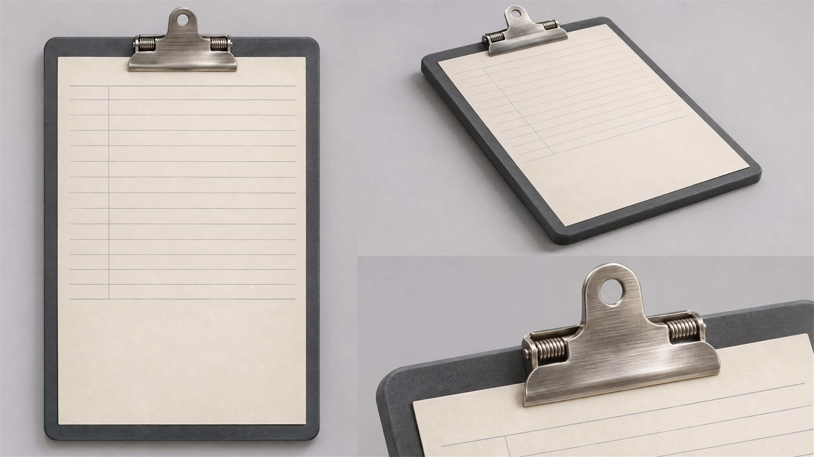
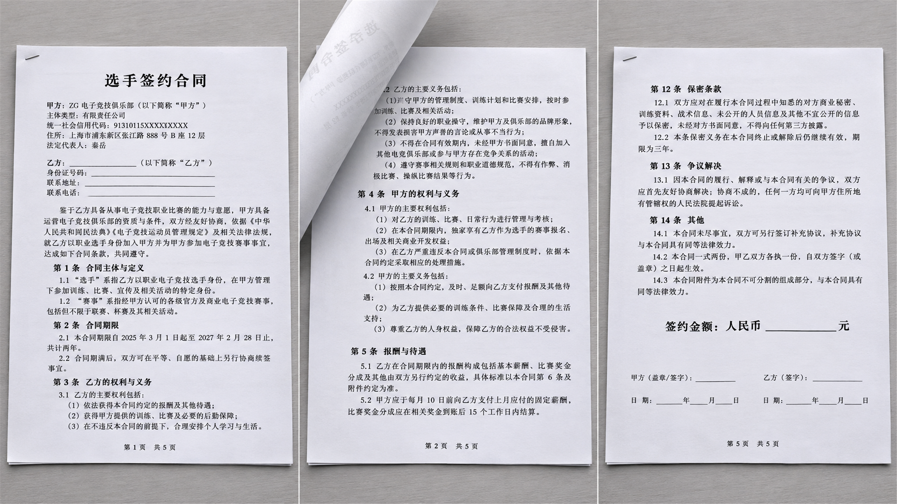
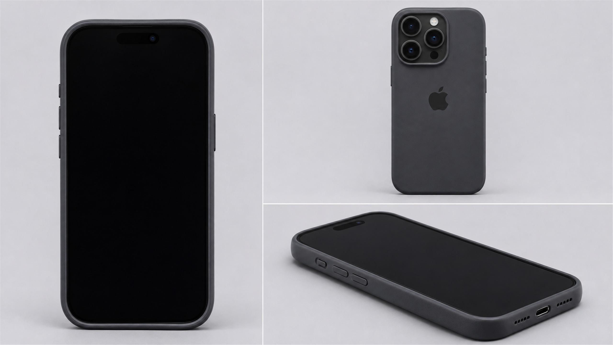
iPhone｜外观
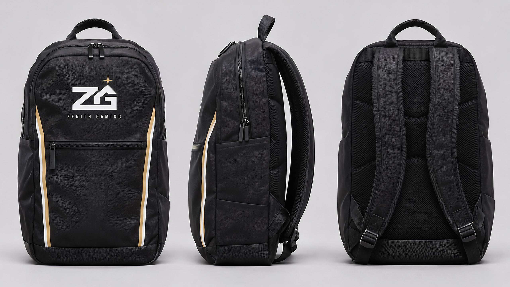
温以宁（Vigil）｜ZG 个人外设包三视图
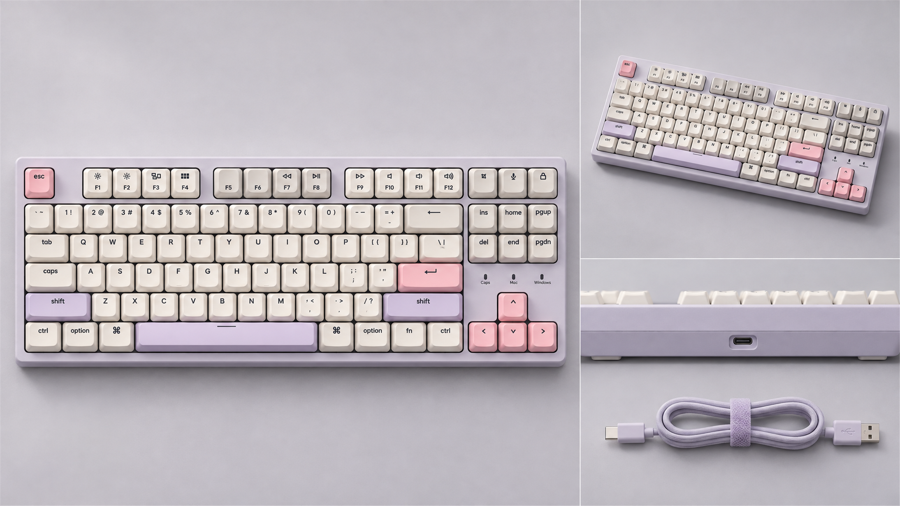
温以宁（Vigil）｜比赛键盘
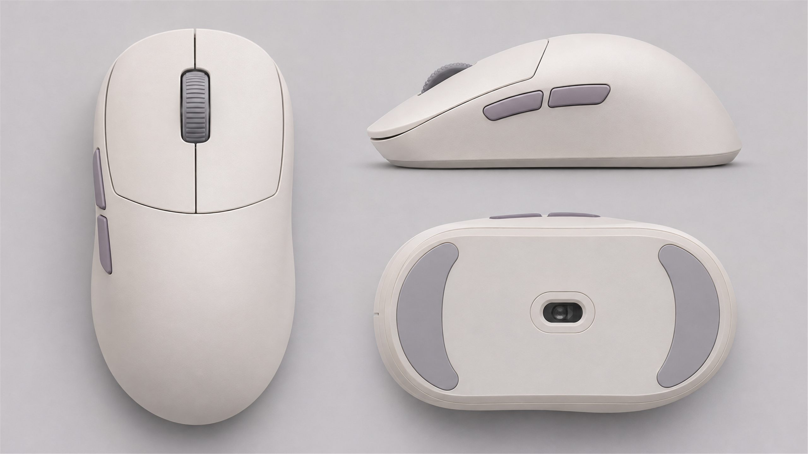
温以宁（Vigil）｜比赛鼠标
ZG 一队｜队徽
贴图制作说明
使用卡片上的 ZG 官方原图，保留图形、字样、配色及比例，导出透明底 PNG。训练室北墙和教练办公室画框共用这张贴图，各自按画面透视合成。
ZG 一队｜队员合照
名单确认后使用
按剧情时点确认 ZG 一队正式合照名单，依照站位顺序上传每位队员的正脸参考，最后上传同阶段 ZG 正式队服参考。生成一张 2560 × 1440 横版真人战队合照原片。全员穿同阶段正式队服，面向镜头，按确认站位自然排开；人物面部和肩线无遮挡，保留头顶及两侧裁切余量，适合装入办公室横画框。简洁的 ZG 基地室内背景，柔和均匀的团队宣传照用光，脸和队服清楚。画面人数与名单一致，每张参考脸只出现一次。画面不带画框、玻璃反光、额外人物、字幕或水印。
05 · 屏幕 / HUD
本集3个屏幕图形候选；可读内容独立贴图关联素材与用途
- 顾行舟（Crown）耳机赞助广告视频 · 待生成。导入横屏广告视频，以正脸稳定段对齐双脸交错。
- 大堂 02 入口反拍 · 已有空间参考。核对屏幕位置和透视。最终跟踪使用实际镜头。
后期制作单
将顾行舟的 16:9 耳机赞助广告视频合成到 EP01 1-1 的大堂宣传屏。产品段与顾行舟正脸段按成片顺序播放。正脸稳定段右侧用独立文字图层排两行 Crown、ZG中单，Crown 大一号，已确认的赞助标识独立排版。成镜双脸交错的时间点对齐广告的正脸稳定段。根据实际镜头做屏幕四角跟踪，匹配屏幕亮度、玻璃反光与景深，并按温以宁经过时的遮挡关系合成。
关联素材与用途
- 天穹中路 B1 实机画面 · 现有地图提示词，底图待制作。承接游戏画面；正式游戏底图还需制作。
- ZG 训练室第三席空景机位 · 新版空景待出图。核对显示器位置；四角贴屏以最终镜头为准。
后期制作单
制作 EP01 1-3 中席显示器的三项独立可编辑 HUD 图层，按剧情先后使用。① 右上角击杀条“ZG.Crown 击杀 PLG.Rift”。② 全体聊天框新增一行“舟哥今天吃什么了？”。③ 终局横幅“胜利”。三项分别出带透明底的图层，方便覆盖在对应的实机画面上。账号按 Crown 本人账号显示，击杀条逐字校对。正式 UI 版式待定，文字、位置及触发顺序可先确定。 原创《天穹》视觉候选使用低对比炭灰底框及高对比字样。击杀条用扁平短横条，选手 ID 分列左右，击杀关系通过中央细小图形区分。全体聊天为左下低透明窄底框，频道标签与正文分色，正文单行优先。胜利置于中央，浅金字配一条低亮边线，背景游戏画面仍可辨。三项各自导出透明图层，按实机动效分别出现。
关联素材与用途
- 温以宁（Vigil）同一部手机 · 外观待制作。确定屏幕比例、圆角和边框；以成镜四角为准。
后期制作单
制作 EP01 1-5 的同一手机两种连续状态。挂电话后，屏幕切到黑屏，玻璃里隐约映出温以宁，倒影用镜头中同一张脸随角度合成。屏幕再亮时显示游戏好友申请，申请人为“EMB丨沈清”，附言为“今晚两点，你们基地对面的便利店，我请你吃夜宵。”。使用竖向画布，按手机实际屏幕比例制作可编辑文字与界面底图，逐字校对。两种状态的边框、圆角和透视保持一致，亮屏内容只出现在手机屏内。 亮屏只展示游戏内好友申请的一张通知卡，先读标题和申请人，再读两至三行附言。选用深色游戏 UI 底、浅色正文字、极少量强调色。按实拍手机在画面中的大小试读，留足屏幕边距，画面里未发生的按键动作保持静止。

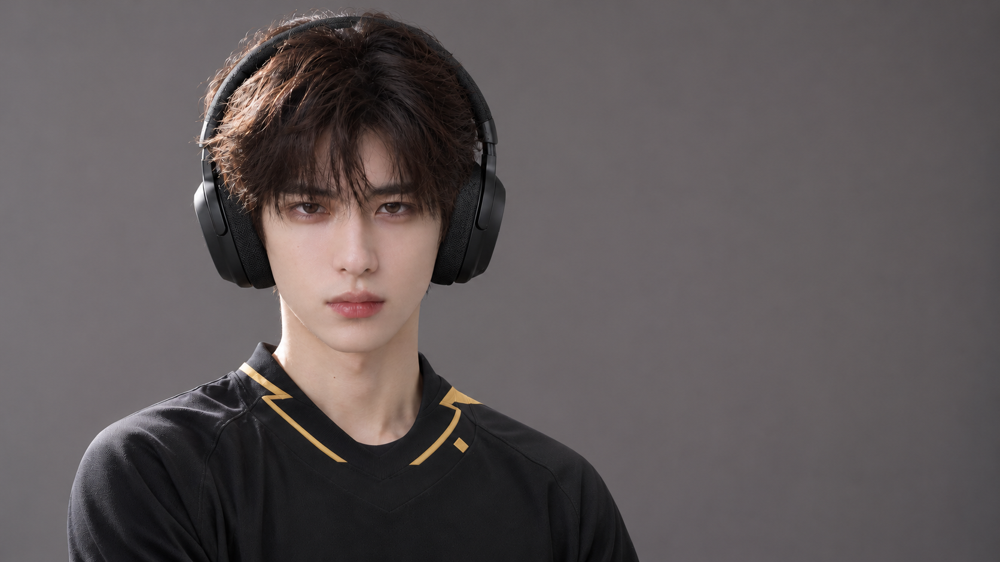
旧版静态肖像存档

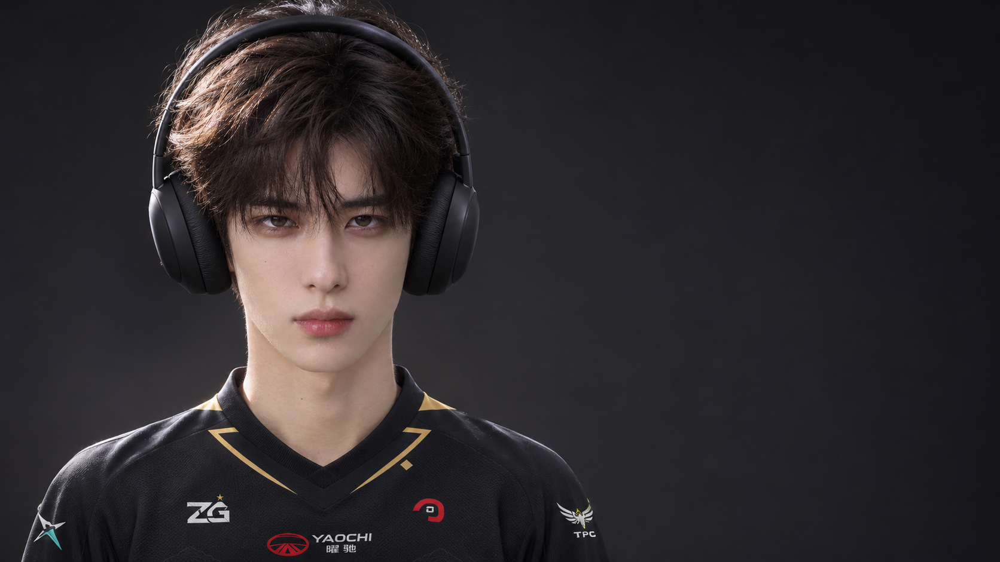
制作参考
广告构图参考（供设计核对） Logitech G ZERO OPPOSITION｜创意团队案例、Razer BlackShark V2 Pro｜官方广告脚本
- 顾行舟本人正脸 · 锁屏内人物面容
- ZG 第 1–2 集 Crown 队服（仅上半身可用） · 仅参考上衣的领口、肩袖、胸前配色与标识。下半身暂不可用。
顾行舟（Crown）｜耳机赞助广告视频
画中人资产，不应算现场COS角色
Seedance 2.5 广告视频提示词
使用正式队标与赞助商标志原文件，按 Crown 同期队服参考上半身核对左胸、右胸、中央胸位和双袖。仅合成构图实际可见的印花。标志保留原字样、轮廓与配色，按布面透视、明暗、褶皱与遮挡变形，视频逐帧跟踪。
【成片】一条 16:9 横版、约 6 秒的真人电竞耳机商业广告，供 ZG 基地大堂横屏轮播。画面直接输出广告内容，背景为摄影棚。无对白、无字幕、无屏幕边框。顾行舟的正脸是广告最终主视觉。 【参考图】 图1：顾行舟本人已核对正脸，只用于锁定同一张脸、发型和自然皮肤细节。 图2：ZG 同期 Crown 队服，只取上半身，仅还原领口、肩袖、配色及金色滚边。胸口和袖部生成干净布面，正式标志作为独立图层合成。画面取胸口以上。 广告耳机为同一副炭黑包耳式，哑光外壳、椭圆软垫耳罩、弧形头梁。产品近景与佩戴镜头保持耳罩形状、接缝和材质一致。 【镜头与灯光】 0–2 秒：85mm 产品近景，短滑轨在耳罩侧前方平着横移。耳机以约 45° 立在深灰实物台面上，实拍侧光滑过转轴和软垫接缝，有真实接触阴影。 2–6 秒：硬切到顾行舟。摄影机与眼睛等高，胸口以上拍摄，完整留住头顶和双耳罩；人处画面左半部，肩线轻微转开，脸正面望镜头。开头手指轻触一次耳罩边缘，随后落出画面。最后约 2 秒保持正脸、视线及相机稳定，右侧深灰背景留排字位。片尾可直接切回产品近景轮播。 使用大型柔光箱、负补光和一盏弱轮廓灯。皮肤保留自然毛孔与真实阴影，眼睛只反现场柔光。配色为中性石墨灰与队服本色，材质呈真实针织、软皮垫及磨砂塑料。无磨皮塑料感、CG 高光、发光描边、漫画渲染、粒子和夸张转场。出片后在稳定正脸段右侧合成 Crown、ZG中单。
06 · 技能 / VFX
本集1个技能特效候选；独立静态参考绮罗 × 伊格尼｜双人起始静帧
待制作 · 空景确认后生成
起始静帧提示词
生成一张16:9真人影视镜头起始静帧。图1是温以宁×绮罗妆造板，图2是欧阳嘉树×伊格尼妆造板，按各自原图锁定演员和妆造。图3是已确认的C1/C2同地形中路空景，锁定地形、光照和通行线。相机平视取双人全景。绮罗位于画面左侧，朝右看；伊格尼位于画面右侧，朝左看。两人站在同一条可行走地面上，中间留出绮罗向前踏一步和细弦出手的距离，双人手部和伊格尼袍角可见。绮罗十指已缠着一根极细的半透明白亮琴弦，弦还在指间。伊格尼身体完整，手臂自然垂下，赭红袍尾有少量贴布边的橙红小火。眼神对向对手，站姿自然，衣摆和地面有真实接触阴影。画面无飞出的弦、火星消散、UI或字幕。输出单张起始画面。
EP01 第 03 段：伊格尼袍角已有火，抬手蓄招。绮罗踏前，白弦从指间弹出，绕上伊格尼手腕并收紧；随后伊格尼碎成火星。
白弦出静帧素材，袍角火和火星出短视频。三条均不需上传角色图；妆造板仅供合成核对。
关联素材与用途
- 绮罗 COS 定稿 · 琴弦随出手与绕腕动作在生视频时制作。
- 伊格尼 COS 定稿 · 袍角火、蓄火与消散在视频生成时制作。
线光｜绮罗白弦
纯静态素材。输出一张横版 PNG，纯黑底中央仅一根极细半透明白琴弦，线体舒缓成弧，白亮细芯带极窄柔晕。全线清楚，不出手、人物、环境或其他光带。
成镜合成：在成镜中用可变形路径做弹出、绕腕与收紧。跟踪绮罗指间和伊格尼腕部，前后弦段按手腕遮挡分层。
火焰｜伊格尼袍角
输出一条约2秒的独立火焰叠加视频，纯黑背景，画幅下部沿水平窄带分布几簇小型橙红火舌。根部位置稳定，尖端自然抖动；首尾状态接近，便于循环。仅出火焰，无衣料、人物或环境。
成镜合成：按伊格尼定妆板识别火舌形袍尾，实际跟踪与遮挡使用成镜布边；火焰在抬手蓄招前已可见。
颗粒｜伊格尼碎成火星
输出一条约1秒的独立火星叠加视频，纯黑背景。开头中心出现一簇橘红细碎亮点，随后向外短促扩散，亮点快速熄灭，末尾回到黑底。仅出火星，无人物、火墙或爆炸闪白。
成镜合成：白弦收紧后才进入消散，按成镜演员轮廓做遮罩，让火星取代消失的身体区域。人物遮罩与粒子分开处理。
07 · 制作引用表
不是每次引用都重新生一张图：同一人物ID、COS ID、场景ID全季共用优先生成本人正脸原图与完整英雄造型；再生成COS组合。无合格人物脸或英雄服装细卡的COS任务需阻塞，不能用一个泛化AI人物充数。